نخستین محصولات مهر ایران دخت، بجهای فلزی ایران کهناند؛ دو بج نخست را از ایران آوردهام و همین حالا موجود و آمادهی سفارشاند و پنج بج دیگر هم بهزودی ساخته میشوند. زیر هر محصول نوشته شده که در ایران موجود است یا در خارج از ایران، تا هر جا که هستی بدانی کدام محصول را میتوانی بخری. خرید با دکمهی «خرید با PayPal» زیر هر محصول انجام میشود: دکمه را بزن و در صفحهی PayPal مبلغ ۷ دلار کانادا را پرداخت کن؛ بعد از پرداخت، از راه صفحهی «پیوند با من» نام بج و نشانیات را برایم بفرست تا سفارشت را برایت ارسال کنم.
پیشفروش
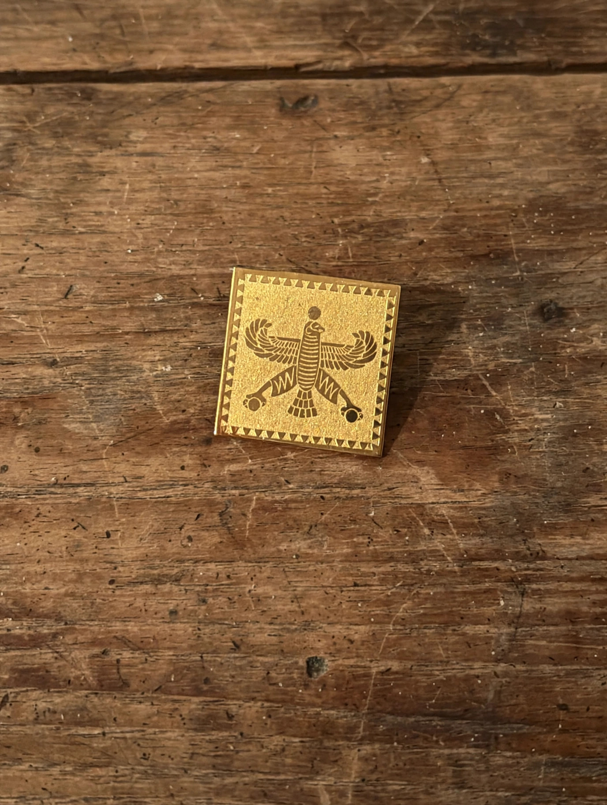
بج فلزی طلایی «شهباز — درفش شهبازی»
شهباز، عقاب طلایی بالگشوده، درفش شاهنشاهی هخامنشیان بود؛ نشانی که بر فراز چوبی بلند پیشاپیش شاه و سپاه ایران برافراشته میشد و نماد فرّ و شکوه پادشاهی، قدرت و پیروزی بود. این نشان از کهنترین نمادهای ایرانزمین است و بر آثار و سکههای باستانی دیده میشود. این بج فلزی طلایی، همان شهباز باستانی را در قاب چهارگوش با حاشیهی مثلثی نشان میدهد.
این بج پیشفروش است. تولید پس از رسیدن به ۵۰ پیشسفارش آغاز میشود و ارسال حدود ۳ تا ۴ هفته پس از تولید انجام میگردد. اگر پیشفروش به حد تولید نرسد، مبلغ پرداختی بهطور کامل بازگردانده میشود.
بج فلزی نقرهای «گاو دوسر تخت جمشید»
این گاو دوسر، سرستون سنگی تالار آپادانای تخت جمشید است؛ دو گاو زانوزده و پشتبهپشت که ستونهای چوبی سقف تالار بر سر آنها تکیه داشت. گاو در ایران باستان نماد قدرت و نگهبانی بود و این سرستون از نمادینترین یادگارهای تخت جمشید است. این بج فلزی نقرهای، همان سرستون باشکوه را در اندازهای کوچک بازسازی کرده است.
درفش کاویانی، پرچم افسانهای ایران، از پیشبند چرمی کاوهی آهنگر ساخته شد؛ همان پیشبندی که کاوه در برابر ضحاک بر سر نیزه کرد و نماد خیزش و آزادی ایرانیان شد. این درفش بعدها با زر و گوهر آراسته و پرچم شاهنشاهی ایران شد.
۷ دلار کاناداموجود در خارج از ایران
بهزودیکوروش بزرگ
بج «کوروش بزرگ»
کوروش بزرگ، بنیانگذار شاهنشاهی هخامنشی و یکی از بزرگترین شاهان تاریخ؛ فاتح بابل و پدیدآورندهی استوانهی کوروش که کهنترین منشور حقوق بشر خوانده میشود.
۷ دلار کاناداموجود در خارج از ایران
بهزودیداریوش بزرگ
بج «داریوش بزرگ»
داریوش بزرگ، شاه هخامنشی که تخت جمشید را بنیان گذاشت و داستان پیروزی و فرمانرواییاش را در کتیبهی بیستون بر دل کوه نوشت؛ سازندهی راهها، قانون و شکوه هخامنشی.
۷ دلار کاناداموجود در خارج از ایران
بهزودیشاپور بزرگ ساسانی
بج «شاپور بزرگ ساسانی»
شاپور بزرگ، شاه ساسانی که امپراتور روم، والرین، را شکست داد و اسیر کرد؛ نقش پیروزی او بر رومیان هنوز بر دیوارهی نقش رستم، روبهروی آرامگاه شاهان هخامنشی، دیده میشود.
۷ دلار کاناداموجود در خارج از ایران
بهزودیشاه و ملکه
بج «شاه و ملکه»
بجی با نگارهی شاه و ملکه؛ یادگاری از نشانهای سلطنتی ایران. عکس این محصول بهزودی افزوده میشود.
۷ دلار کاناداموجود در خارج از ایران
بهزودیشیر و خورشید
بج «شیر و خورشید»
شیر و خورشید، کهنترین و شناختهشدهترین نشان ایران است؛ شیری شمشیر به دست که خورشید از پشتش برمیدمد. این نشان سدهها بر پرچم ایران بود و نماد ایرانزمین، پادشاهی و روشنایی است. این بج فلزی طلایی، شیر و خورشید را بهصورت برجسته نشان میدهد.
۷ دلار کاناداموجود در خارج از ایران
نکتهی خرید:پرداخت در صفحهی رسمی PayPal انجام میشود و مبلغ ۷ دلار کانادا از پیش نوشته شده است. پس از پرداخت، از راه صفحهی «پیوند با من» نام بج، نام خودت و نشانی پستیات را بفرست تا سفارشت را برایت ارسال کنم.
۱برگزیدن بجبجی رو که دوست داری برگزین — شهباز یا گاو تخت جمشید.
۲پرداخت با PayPalدکمهی «خرید با PayPal» زیر بج را بزن و مبلغ ۷ دلار کانادا را در صفحهی PayPal پرداخت کن.
۳نشانیات را بفرستبعد از پرداخت، از راه صفحهی «پیوند با من» نام بج و نشانی پستیات را بفرست تا سفارشت را برایت بفرستم.
هم وبسایت، هم اپلیکیشن
اپلیکیشن مهر ایران دخت — همین سایت، روی صفحهی گوشی تو
مهر ایران دخت تنها وبسایت نیست؛ اپلیکیشن هم دارد. همین صفحه را میشود روی گوشی نصب کرد تا آیکون «مهر ایران دخت» روی صفحهی اصلی گوشی بنشیند و با یک لمس، تمامصفحه و مانند یک اپ راستین باز شود — با همهی بخشهایش: فروشگاه، شاهنامه، اوستا، گاهشمار و یادگارهای باستانی. نه بارگیریای از فروشگاه میخواهد، نه هزینهای دارد و نه گذرواژه و کاربریای.
مهر ایران دختفروشگاه برخط الناز
پس از نصب، مهر ایران دخت با همین آیکون روی صفحهی اصلی گوشیات مینشیند.
هنوز روی این دستگاه نصب نشده
آیفون و آیپد (سافاری)
این صفحه را در مرورگر سافاری باز کن.
روی دکمهی همرسانی (چهارگوش با پیکان رو به بالا) بزن.
«افزودن به صفحهی اصلی» (Add to Home Screen) را برگزین.
روی «افزودن» بزن؛ تمام شد، اپ روی گوشیات است.
اندروید (کروم)
این صفحه را در مرورگر کروم باز کن.
اگر دکمهی «نصب اپلیکیشن» این بالا آمد، همان را بزن.
یا از منوی سهنقطه، «نصب برنامه» یا «افزودن به صفحهی اصلی» را برگزین.
روی «نصب» بزن؛ تمام شد، اپ روی گوشیات است.
هر وقت سایت بهروز شود — داستان تازه، کالای تازه — اپلیکیشن هم خودکار همان نسخهی تازه را نشان میدهد؛ نیازی به بهروزرسانی از فروشگاه نیست.
آگاهسازی بخشهای تازه
زنگ آگاهسازی را فعال کن تا هر وقت بخش تازهای — داستان یا صدای تازه، کالای تازه — به سایت اضافه شد، روی گوشیات آگاه شوی؛ حتی وقتی سایت بسته است. روی آیفون، نخست اپ را با گامهای همین صفحه نصب کن و بعد زنگ را از داخل خود اپ بزن.
و اپاستور؟ میشود آنجا هم گذاشتش؟
آره، شدنی است و راهش بسته نیست؛ تنها دو راه گوناگون دارد و خوب است هر دو را بدانی تا وقتی مهر ایران دخت را میشناسانی، با خیال راحت بگویی هم وبسایت دارد و هم اپلیکیشن:
همین حالا آماده استاپ نصبشدنی از خودِ سایت
همین اپلیکیشنی که این بالا میبینی: رایگان است، همین امروز روی آیفون و اندروید نصب میشود و نیازی به کاربریِ سازنده و بازبینی فروشگاه ندارد. برای آغاز مهر ایران دخت، همین بهترین راه است و مردم با همان لینک سایت، اپ را هم میگیرند.
گام بعدی، هر وقت خواستیبرنامهی مهر ایران دخت در اپاستور و گوگلپلی
همین سایت را میشود در آینده به برنامهی فروشگاهی هم تبدیل کرد و در اپاستور اپل و گوگلپلی گذاشت تا مردم از خودِ فروشگاهها هم پیدایش کنند. هماکنون اما همان نسخهی رایگان و نصبشدنی از خودِ سایت بهترین راه است؛ گامِ فروشگاه را میگذاریم برای وقتی که فروشگاه کالا و خریدار خودش را داشته باشد.
کوتاهِ سخن: امروز میتوانی با سرافرازی بگویی «مهر ایران دخت هم سایت دارد، هم اپلیکیشن» — و اگر روزی خواستی، درِ اپاستور هم به رویش باز است.
گاهشمار کهن ایران
گاهشمار شاهنشاهی ایران — گاهشماری دو هزار و پانصد و چند ساله
این گاهشمار، سالها را از تاجگذاری کوروش بزرگ، بنیانگذار شاهنشاهی ایران، در سال ۵۵۹ پیش از میلاد میشمارد؛ برای همین است که شمارهی سالش از دو هزار و پانصد گذشته است. سال شاهنشاهی، مانند سال خورشیدی، با نوروز و نخستین روز بهار آغاز میشود و ماههایش همان دوازده ماه آشنای فروردین تا اسفندند؛ تنها شمارهی سال جداست و همیشه ۱۱۸۰ سال از سال خورشیدی پیشتر است: سال ۱۴۰۵ خورشیدی، همان سال ۲۵۸۵ شاهنشاهی است.
۲۸
امروز در گاهشمار شاهنشاهیپنجشنبه، ۲۸ آبان ۲۵۸۵ شاهنشاهیبرابر با ۲۸ آبان ۱۴۰۵ خورشیدی · ۱۹ نوامبر ۲۰۲۶ میلادی
گاهشمار را در صفحهای جدا و تمامصفحه باز کن؛ میتوانی آن را جدا به صفحهی اصلی گوشیات بیفزایی تا همیشه یک اشاره با تو فاصله داشته باشد.
جشنهای نزدیک
با زدن دکمهی «یادآوری»، یک پروندهی کوچکِ تقویم بارگیری میشود؛ آن را روی گوشیات باز کن و «افزودن به تقویم» را بزن تا آن روز در تقویم گوشیات بنشیند و یک روز پیش از آن به تو یادآوری شود. این یادآوری از سوی تقویم گوشی خودت میآید؛ برای آگاه شدن از بخشهای تازهی خود سایت هم زنگ آگاهسازی را در صفحهی خانه یا بخش اپلیکیشن فعال کن.
دوازده ماه سال شاهنشاهی
برای دیدن روزهای هر ماه و جشنهای آن ماه، روی اسم ماه بزن.
جشن و مناسبتگاهنبارروز نبر
گاهشمار را روی گوشیات بگذار
آیفون (سافاری)
صفحهی «گاهشمار جدا» را در سافاری باز کن
دکمهی اشتراکگذاری را بزن
«افزودن به صفحه اصلی» را انتخاب کن
اندروید (کروم)
صفحهی «گاهشمار جدا» را در کروم باز کن
منوی سهنقطه را بزن
«افزودن به صفحه اصلی» را انتخاب کن
در سال ۱۳۵۰ خورشیدی، که سال ۲۵۳۰ شاهنشاهی بود، جشنهای دو هزار و پانصدمین سال بنیانگذاری شاهنشاهی ایران برگزار شد و از آغاز سال ۱۳۵۵ خورشیدی (۲۵۳۵ شاهنشاهی) این گاهشمار چند سالی گاهشمار رسمی کشور بود. امروز هم بسیاری از ایرانیان، در کنار گاهشمار خورشیدی، سال شاهنشاهی را به یادگار آن گذشتهی کهن زنده نگه میدارند.
شهرزاد قصهگو
هزار و یک شب — قصههایی که شهرزاد برای شهریار گفت
هزار و یک شب کتابی است از قصههای کهن که مردمان سرزمینهای گوناگون، سدهها آنها را سینهبهسینه برای هم گفتهاند تا سرانجام در این کتاب گرد آمدهاند. همهی قصهها در چارچوب یک داستان گفته میشوند: شهرزاد، دختر خردمند وزیر، هر شب برای شهریار پادشاه قصهای میگوید و آن را ناتمام میگذارد تا سپیدهدم. این بخش هم مانند بخشهای شاهنامه و اوستا، از شب یکم و بهترتیب کتاب پیش میرود؛ هر قصه نگارهی ویژهی خودش را دارد و متنها گزیده و خلاصهای از قصهها به فارسی رواناند، نه متن کامل کتاب.
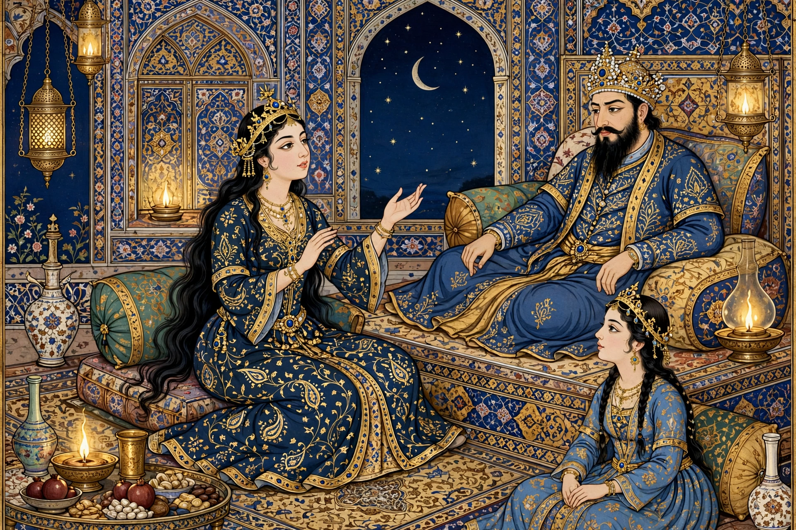
نگارهی زنده · در حرکتشهرزاد در شبنشینی کاخ، برای شهریار قصه میگوید و دنیازاد، خواهرش، کنار اوست — آغاز هزار و یک شب قصهگویی.
نگارهها دیگه عکسِ ثابت نیستن — زنده و در حرکتنچراغهای کاخ سوسو میزنن، ماه از پنجره پیداست و نور آروم روی صحنه میلغزه؛ درست مثل شبی که شهرزاد قصه میگفت. اگه چشمت خسته شد، با دکمهی روبهرو حرکت رو نگه دار.
تازهشب یکم · داستان چارچوب کتاب، بهترتیب
شهرزاد و شهریار
با صدای خودم بشنواین بخش را با صدای خودم خواندهام؛ دکمهی پخش را بزن و با صدای من گوش بده.0:00 / 3:08
۳:۰۸
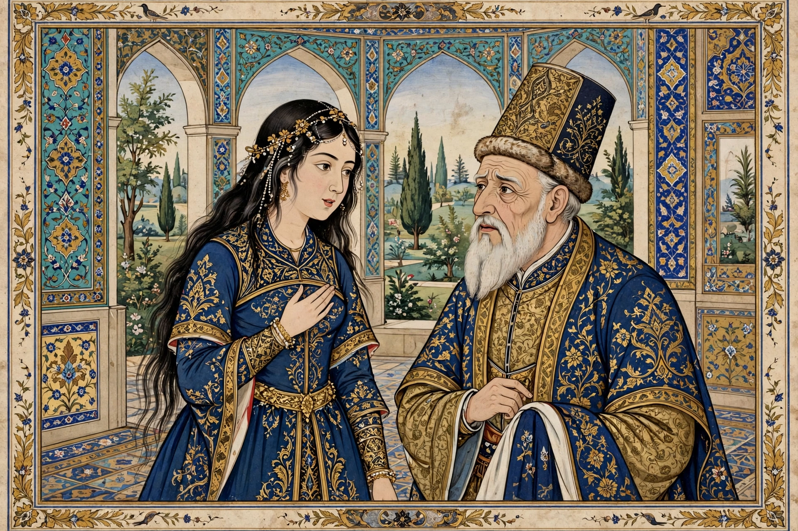
نگارهی زنده · در حرکتشهرزاد پیش پدرش وزیر — خودش داوطلب میشود نزد شهریار برود تا کشتار دختران شهر پایان یابد.
در روزگاران کهن، پادشاهی بود به نام شهریار. شهریار روزی دانست که همسرش به او خیانت کرده است؛ دلش از خشم و اندوه پر شد و از آن پس به همهی زنان بدگمان شد. پادشاه سوگند خورد که هر شب با دختری از شهر ازدواج کند و سپیدهدم او را بکشد، تا دیگر هیچ زنی فرصت خیانت پیدا نکند. سه سال این کار ادامه یافت و شهر پر از سوگ و ترس شد؛ خانوادهها دخترانشان را پنهان میکردند یا از شهر میگریختند.
وزیر پادشاه دو دختر داشت: بزرگتر، شهرزاد، و کوچکتر، دنیازاد. شهرزاد دختری خردمند و کتابخوانده بود؛ هزاران قصه و داستان و سرگذشت شاهان و مردمان گذشته را میدانست و از بر بود. روزی شهرزاد به پدرش گفت: مرا نزد پادشاه بفرست؛ یا کشته میشوم، یا کاری میکنم که این کشتار برای همیشه پایان یابد. وزیر هرچه کوشید او را از این کار بازدارد، شهرزاد نپذیرفت؛ دلش برای دختران شهر میسوخت.
شب نخست، شهرزاد از پادشاه خواست خواهرش دنیازاد هم نزد او باشد. نیمهشب، دنیازاد گفت: خواهر، قصهای برایمان بگو تا شب بگذرد. شهرزاد قصهای چنان شیرین و شگفت آغاز کرد که پادشاه چشم از او برنمیداشت؛ اما درست وقتی قصه به هیجانانگیزترین جایش رسید، سپیده دمید و شهرزاد خاموش شد و گفت: بقیهاش بماند برای فردا شب. شهریار که تشنهی شنیدن پایان قصه بود، گفت یک شب دیگر زنده بمانی تا قصه تمام شود.
این کار هر شب تکرار شد: قصهای تازه، و پایانی ناتمام در سپیدهدم. شبها گذشتند و قصهها یکی از دیگری دلنشینتر شدند؛ قصههایی از شاهان و پهلوانان، از بازرگانان و ماهیگیران، از جن و پری و شهرهای دور. کمکم دل شهریار نرم شد؛ از قصهها دادگری و مهربانی و بخشش آموخت و خشم کهنه از دلش رفت. هزار و یک شب گذشت و پادشاه سرانجام از کشتن دست کشید و شهرزاد، که با قصهگویی هم جان خودش را نجات داده بود و هم جان دختران شهر را، ملکه شد.
این متن، گزیده و خلاصهای از داستان چارچوب هزار و یک شب است که به فارسی روان بازنویسی شده، نه متن کامل و اصلی کتاب. قصههای این بخش هم یکییکی و به همان ترتیبی میآیند که در کتاب آمدهاند.
تازهقصهی دوم · بهترتیب هزار و یک شب
تاجر و عفریت
با صدای خودم بشنواین بخش را با صدای خودم خواندهام؛ دکمهی پخش را بزن و با صدای من گوش بده.0:00 / 3:46
۳:۴۶
نگارهی زنده · در حرکتتاجر و عفریت — هستههای خرما کنار جوی آب، و عفریت خشمگین با شمشیر برهنه.
نخستین قصهای که شهرزاد برای شهریار گفت، قصهی بازرگانی توانگر است که برای دادوستد به سفری دور رفته بود. روزی در راه، کنار چشمهای زیر درختی نشست تا نفسی تازه کند؛ کیسهاش را گشود، پارهای نان و چند دانه خرما خورد و هستههای خرما را به اینسو و آنسو انداخت. هنوز برنخاسته بود که زمین لرزید و عفریتی غولپیکر با شمشیری برهنه از میان گرد و غبار پدیدار شد و بانگ زد: برخیز و آمادهی مرگ باش؛ تو پسرم را کشتهای! بازرگان شگفتزده گفت: من که کسی را ندیدهام! عفریت گفت: پسرم نادیدنی از اینجا میگذشت و یکی از هستههایی که انداختی به سینهاش خورد و او را کشت؛ خون در برابر خون.
بازرگان هرچه لابه و زاری کرد و گفت که این کار ندانسته و بیقصد بوده است، دل عفریت نرم نشد. سرانجام بازرگان گفت: پس به من یک سال مهلت بده تا به شهرم بازگردم، بدهیهایم را بپردازم، با زن و فرزندانم خداحافظی کنم و پس از یک سال، خودم به همینجا برگردم. عفریت پذیرفت و بازرگان سوگند خورد و رفت. یک سال گذشت؛ بازرگان کارهایش را سامان داد، با خانواده وداع کرد و به پیمانش وفا کرد: به کنار همان چشمه بازگشت و گریان و منتظر نشست.
در همین هنگام، پیرمردی از راه رسید که آهویی را با زنجیر همراه داشت. چون ماجرا را شنید، شگفتزده کنار بازرگان نشست تا پایان کار را ببیند. عفریت از راه رسید و شمشیر کشید. پیرمرد گفت: ای عفریت، اگر قصهی شگفت این آهو را برایت بگویم و تو را به شگفت آورد، آیا یک سوم خون این مرد را به من میبخشی؟ عفریت پذیرفت. پیرمرد گفت: این آهو، همسر من است؛ جادوگری آموخته بود و از سر کینه، پسرم را به گوساله و مادرش را به گاو بدل کرد. دختر چوپانمان که جادو میدانست، پسرم را به ریخت آدمی بازگرداند و همسرم را برای همیشه به آهویی بدل کرد. عفریت از قصه به شگفت آمد و یک سوم خون بازرگان را بخشید.
آنگاه پیرمرد دومی از راه رسید با دو سگ سیاه، و سپس پیرمرد سومی با یک استر. هر یک قصهای شگفتتر از دیگری گفت: سگهای سیاه، دو برادر پیرمرد دوم بودند که از حسادت، او و همسرش را به دریا انداخته بودند و پریای دریایی نجاتش داده و برادران را به سگ بدل کرده بود؛ و آن استر، همسر پیرمرد سوم بود که او را به سگ بدل کرده بود تا سرانجام خود به ریخت استر درآمد. عفریت با شنیدن هر قصه، یک سوم دیگر از خون بازرگان را بخشید. چنین شد که بازرگان بیگناه، به برکت سه قصهی شگفت، از مرگ رست و شادان به خانه و خانوادهاش بازگشت.
این متن، گزیده و خلاصهای از قصهی تاجر و عفریت از هزار و یک شب است که به فارسی روان بازنویسی شده، نه متن کامل و اصلی کتاب. در این قصه، سه پیرمرد هر یک قصهای درون قصه میگویند؛ همان شیوهی قصهدرقصهای که سراسر هزار و یک شب را میسازد.
قصهی سوم · بهترتیب هزار و یک شب
ماهیگیر و جن
با صدای خودم بشنواین بخش را با صدای خودم میخوانم و ضبطش را همینجا میگذارم تا با صدای من گوش بدهی.
بهزودی
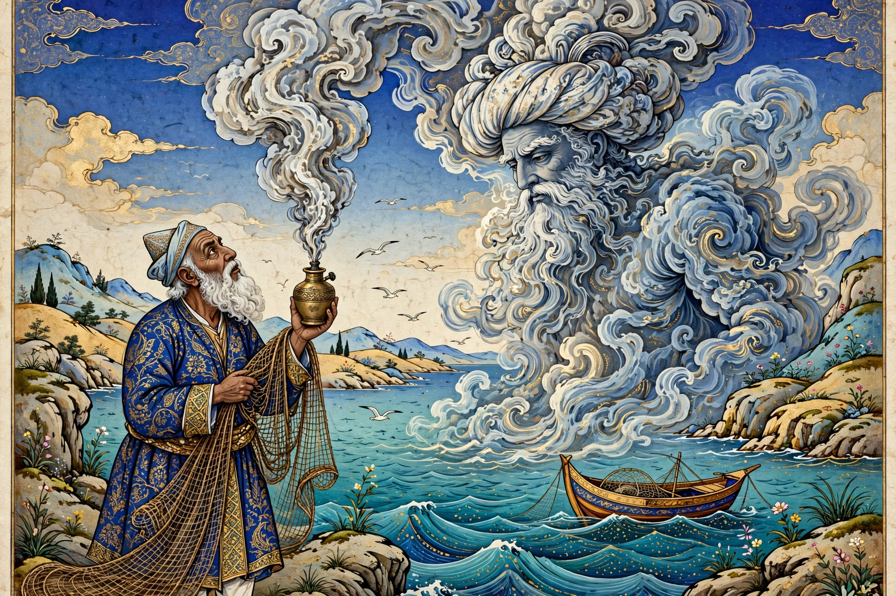
نگارهی زنده · در حرکتماهیگیر و جن — دود کوزهی برنجی، بر فراز موجها به پیکر جنی بزرگ درآمده است.
ماهیگیر پیری بود که با زن و سه فرزندش در تنگدستی روزگار میگذراند و پیمان کرده بود هر روز بیش از چهار بار تور به دریا نیندازد. روزی تور را انداخت: بار نخست، الاغی مرده بالا آمد؛ بار دوم، خمرهای پر از خاک و گل؛ بار سوم، خردهشیشه و استخوان. بار چهارم، تور سنگین شد و ماهیگیر با خود گفت این بار روزیام رسیده است؛ اما بهجای ماهی، کوزهای مسی و سربسته از آب بیرون آمد که مهر سلیمان بر آن بود. ماهیگیر سرب کوزه را گشود؛ دودی سیاه بیرون جست، تا آسمان بالا رفت و اندکاندک به پیکر جنی غولآسا بدل شد.
جن سر بر آسمان داشت و چشمانش چون دو کاسهی آتش بود. ماهیگیر از ترس لرزید. جن گفت: ای ماهیگیر، مژدهات میدهم… به مرگ! و خندید. ماهیگیر گفت: من تو را از زندان رهاندم، پاداشم مرگ است؟ جن گفت: سالیان دراز در این کوزه، در ژرفای دریا زندانی بودم؛ سلیمان مرا به گناه سرکشی در این کوزه مهر کرده بود. در سدههای نخست سوگند خوردم رهایندهام را توانگر کنم و گنجها بر او بگشایم؛ اما هرچه گذشت و کسی نیامد، خشمگین شدم و سوگند خوردم هر که مرا رها کند، او را بکشم و تنها مرگش را به دلخواه خودش بگذارم. ماهیگیر هرچه التماس کرد، سودی نداشت.
ماهیگیر که دید با زور و زاری کاری از پیش نمیرود، به چارهاندیشی افتاد و گفت: یک چیز را نمیفهمم؛ تو با این پیکر بزرگ، چگونه در این کوزهی کوچک جا گرفتهای؟ هرگز باورم نمیشود، مگر آنکه با چشمان خودم ببینم. جن که میخواست راستگوییاش را ثابت کند، به دود بدل شد و کمکم دوباره در کوزه فرو رفت. همین که همهی دود در کوزه جا گرفت، ماهیگیر تند سرب سربی را بر دهانهی کوزه گذاشت و آن را محکم بست و گفت: حالا تو را به همان دریایی بازمیگردانم که از آن بیرونت کشیدم، و خانهای در ساحل میسازم تا هر ماهیگیری را از گشودن کوزهات بازدارم!
جن از درون کوزه فریاد و التماس کرد و سرانجام به نام بزرگ خدا سوگند خورد که اگر رهایش کند، هرگز آزارش نرساند و پاداشی نیکو بدهد. ماهیگیر کوزه را گشود. جن او را به برکهای میان دو کوه برد که ماهیانی چهاررنگ داشت: سپید، سرخ، زرد و آبی. گفت: هر روز از این برکه ماهی بگیر و روزگارت نیکو میشود. ماهیگیر هر روز چهار ماهی از آن برکه میگرفت و به آشپز سلطان میفروخت و پول خوبی میگرفت؛ چندی نگذشت که از تنگدستی رست و توانگر شد. اما آن ماهیهای چهاررنگ، خود رازی بزرگ داشتند و سرآغاز قصهای دیگر شدند که در جای خودش گفته میشود.
این متن، گزیده و خلاصهای از قصهی ماهیگیر و جن از هزار و یک شب است که به فارسی روان بازنویسی شده، نه متن کامل و اصلی کتاب. پیام روشن قصه این است: ماهیگیر تهیدست، نه با زور، که با خرد و زیرکی بر جنِ غولپیکر چیره میشود.
شبهای آینده · بهترتیب کتاب — در راه
سه سیب
با صدای خودم بشنواین بخش را با صدای خودم میخوانم و ضبطش را همینجا میگذارم تا با صدای من گوش بدهی.
بهزودی
نگارهی زنده · در حرکتسه سیب — صندوق سنگین از آبهای دجله بیرون میآید و رازی هولناک در آن است.
در بغداد، خلیفه هارونالرشید شبانگاه با وزیرش جعفر و مسرورِ شمشیرزن، ناشناس در شهر میگردد. کنار دجله، ماهیگیری صندوقی سنگین از آب بیرون میکشد؛ صندوق را نزد خلیفه میگشایند و در آن پیکر زن جوانی را مییابند که کشته شده است. خلیفهی خشمگین به جعفر سه روز مهلت میدهد: یا کشنده را بیابد، یا خودش به دار میرود. کشنده کیست و سه سیب این قصه کجای ماجراست؟ این قصه بهزودی، در شب خودش، همینجا گفته میشود.
شبهای آینده · بهترتیب کتاب — در راه
نورالدین علی و پسرش بدرالدین حسن
با صدای خودم بشنواین بخش را با صدای خودم میخوانم و ضبطش را همینجا میگذارم تا با صدای من گوش بدهی.
بهزودی
نگارهی زنده · در حرکتنورالدین علی و پسرش — داماد جوان بر اسب سپید، شب عروسی به دروازهی کاخ میرسد.
در قاهره، دو برادر که هر دو وزیرند، با هم پیمان میبندند که در یک شب ازدواج کنند و اگر یکی را پسر و دیگری را دختر آمد، آن دو را به هم دهند. از این پیمان، نورالدین علی و برادرش راهشان از هم جدا میشود و پسر نورالدین، بدرالدین حسن، در بصره بزرگ میشود؛ جوانی چنان زیبا که یک شب، دست سرنوشت و جنی بازیگوش او را از بسترش در بصره برمیدارد و در قاهره، در حجلهی عروسی همان دختری مینشاند که از پیش از زادن برای او نامزد شده بود — و سپیدهدم ناپدید میشود. پدر و پسر سالها بعد چگونه هم را بازمییابند؟ این قصه بهزودی، در شب خودش، همینجا گفته میشود.
قصهی ششم · بهترتیب هزار و یک شب
حمال و سه بانو
با صدای خودم بشنواین بخش را با صدای خودم میخوانم و ضبطش را همینجا میگذارم تا با صدای من گوش بدهی.
بهزودی
نگارهی زنده · در حرکتحمال و سه بانو — حمال با سبد پر، بر آستانهی خانهی سه بانو.
در بغداد، حمالی جوان در بازار ایستاده بود که بانویی زیبا و خوشپوش نزد او آمد و از او خواست سبدش را بر دوش بگیرد و همراهش بیاید. بانو از دکانهای گوناگون خرید کرد: سیب و به و هلو و خیار و گل و عطر و شیرینی، و سبد کمکم سنگین شد. حمال سبد را تا خانهای بزرگ و زیبا برد. در را بانوی دیگری گشود و سومی، که انباردار خانه بود، پول خریدها را داد. هر سه بانو جوان و زیبا بودند و در آن خانه تنها زندگی میکردند. چون حمال خواست برود، بانوان گفتند: امشب پیش ما بمان؛ دستمزدت را دو چندان میدهیم. حمال ماند. اما بانوان شرطی گذاشتند که بر در خانه هم نوشته شده بود: «هر که از آنچه به او ربطی ندارد سخن بگوید، چیزی خواهد شنید که خوشش نمیآید»؛ یعنی هیچکس نباید از آنچه میبیند پرسشی کند.
شب که شد، سه درویش یکچشم — قلندرانی که مو و ریش و ابرو تراشیده بودند — به در خانه آمدند و پناه خواستند؛ بانوان آنها را هم با همان شرط به درون پذیرفتند. کمی بعد، سه بازرگان از موصل رسیدند که در حقیقت، خلیفه هارونالرشید و وزیرش جعفر و مسرور بودند که ناشناس در شهر میگشتند؛ آنها هم با همان شرط وارد شدند. مجلس گرم شد و خوردنی و نوشیدنی و ساز و آواز برپا شد. اما در میان شادی، چیزهای شگفتی پیش آمد: یکی از بانوان دو سگ سیاه را آورد، آنها را با تازیانه زد و سپس در آغوش گرفت و گریست؛ و بانوی دیگر، چون آواز میخواند، از شدت شور جامهاش کنار رفت و جای زخمهای تازیانه بر تنش پدیدار شد. مهمانان از شگفتی میسوختند، اما شرط را به یاد داشتند و خاموش ماندند.
سرانجام خلیفه نتوانست تاب بیاورد و به جعفر اشاره کرد که بپرسد. همین که پرسش آغاز شد، بانوی بزرگ خانه خشمگین شد و بانگ زد و دست بر هم زد؛ هفت غلام سیاه با شمشیرهای برهنه به درون آمدند و هر مهمان را پشت سر یک غلام نشاندند تا گردنشان را بزنند. در واپسین دم، بانو گفت: پیش از مرگ، هر یک سرگذشتش را بگوید. نخست قلندران، یکبهیک، قصههای شگفت خود را گفتند: هر سه شاهزاده بودند و هر یک به ماجرایی یک چشمش را از دست داده بود و دست سرنوشت آنها را به بغداد کشانده بود.
آنگاه نوبت بانوان رسید و رازها گشوده شد: آن دو سگ سیاه، دو خواهر بانوی بزرگ بودند که جنی خشمگین آنها را به سگ بدل کرده بود؛ و جای زخمهای بانوی دیگر، یادگار شوهری بود که او را به تهمتی نادرست تازیانه زده بود. خلیفه چون همه را شنید، خود را آشکار کرد و فرمود جن را حاضر کردند؛ جن خواهران را به ریخت آدمی بازگرداند. خلیفه هر یک از آن سه بانو را به یکی از آن سه قلندرِ شاهزاده داد و حمال را نیز از یاد نبرد و او را از نزدیکان خود کرد. چنین بود قصهی آن شب شگفتِ خانهی سه بانو؛ شبی که با یک سبد خرید آغاز شد و با سه پیوند فرخنده به پایان رسید.
این متن، گزیده و خلاصهای از قصهی حمال و سه بانو از هزار و یک شب است که به فارسی روان بازنویسی شده، نه متن کامل و اصلی کتاب. در دل این قصه، قصههای دیگری هم هست — قصهی هر یک از سه قلندر و قصهی هر یک از بانوان — که خود، شبهای دیگری از هزار و یک شباند.
قصهی هفتم · بهترتیب هزار و یک شب
خیاط و گوژپشت
با صدای خودم بشنواین بخش را با صدای خودم میخوانم و ضبطش را همینجا میگذارم تا با صدای من گوش بدهی.
بهزودی
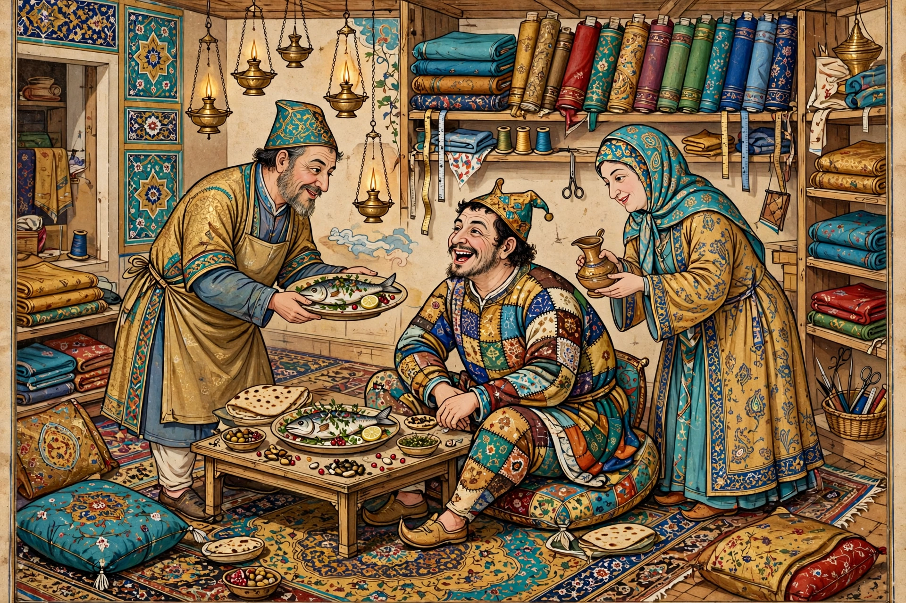
نگارهی زنده · در حرکتخیاط و گوژپشت — مهمانی ماهی در خانهی خیاط، و خندهای که آغاز ماجراست.
در شهری دور، خیاطی بود که با همسرش در خانهای کوچک و گرم زندگی میکرد. شبی خیاط از کار روزانه به خانه آمد و همسرش گفت: امشب دلم تفریح و خنده میخواهد. همان دم، از کوچه آواز و خندهای شنیدند: گوژپشتی کوتاهقد و خندهرو میگذشت که دلقک شاه بود و با ساز و آواز و شوخی، همهی شهر را میخنداند. خیاط او را به خانه خواند تا شبی را با خنده بگذرانند. سفره پهن شد و خوراکها آمد و در میان آنها ماهی بزرگی هم بود که همسر خیاط پخته بود.
گوژپشت گرسنه و شاد، بیدرنگ تکهای بزرگ از ماهی برداشت و در دهان گذاشت و خندهکنان فرو برد؛ اما استخوانی از ماهی در گلویش گیر کرد. رنگش کبود شد، دست و پا زد و بیجان بر زمین افتاد. خیاط و همسرش از ترس خشکشان زد: دلقک شاه در خانهی آنها مرده بود! اگر خبر به شاه میرسید، کیفرشان مرگ بود. زن خیاط چارهای اندیشید: پیکر گوژپشت را در ملحفهای پیچیدند و نیمهشب، به بهانهی بردن بیمار نزد پزشک، او را به خانهی پزشکی بردند که در همان نزدیکی بود؛ پول درمان را دادند و پیکر را بر بالای پلکان خانهی پزشک نهادند و شتابان بازگشتند.
پزشک، شتابان و خوابآلود، از پلهها پایین آمد و پایش به پیکر خورد و آن را از پلهها به پایین غلتاند. چون دید مردی بیجان افتاده است، پنداشت او را کشته است. از ترس، پیکر را به پشتبام برد و با طناب از دودکش به خانهی همسایه آویخت؛ همسایه، بازرگانی بود که چون سایهای را در انبارش دید، پنداشت دزد است و با چوب بر او زد و چون بیجان افتاد، پنداشت دزد را کشته است. بازرگان نیز پیکر را بر دوش گرفت و در کوچه، به دیوار بازار تکیهاش داد و گریخت.
بامداد، داروغهی شهر پیکر را یافت که به دیوار تکیه زده بود و چون تکانش داد و بر زمین افتاد، پنداشت مردی مست را گرفته است؛ اما چون دانسته شد مرده، گوژپشتِ دلقک شاه است، کار به پیش شاه کشید. هر که پیکر را واپسین بار دیده بود، از ترس جان، گناه را به گردن دیگری میانداخت و زنجیرهای از بهگردنانداختنها ساخته شد که هر حلقهاش قصهای داشت. سرانجام همه را پیش شاه آوردند و هر یک آماده بود گناه مرگ گوژپشت را به گردن بگیرد — اما پایان این ماجرا شگفتتر از آغازش است و در شبهای آینده گفته میشود؛ چرا که گوژپشت ما هنوز حرفهای آخرش را نزده است!
این متن، گزیده و خلاصهای از آغاز قصهی خیاط و گوژپشت از هزار و یک شب است که به فارسی روان بازنویسی شده، نه متن کامل و اصلی کتاب. این قصه سرآغاز چرخهای از قصههای پیدرپی است که هر یک را یکی از کسانی میگوید که پیکر گوژپشت به خانهاش رسیده بود.
تازهقصهی هشتم · بهترتیب هزار و یک شب
نورالدین و انیسالجلیس
با صدای خودم بشنواین بخش را با صدای خودم میخوانم و ضبطش را همینجا میگذارم تا با صدای من گوش بدهی.
بهزودی
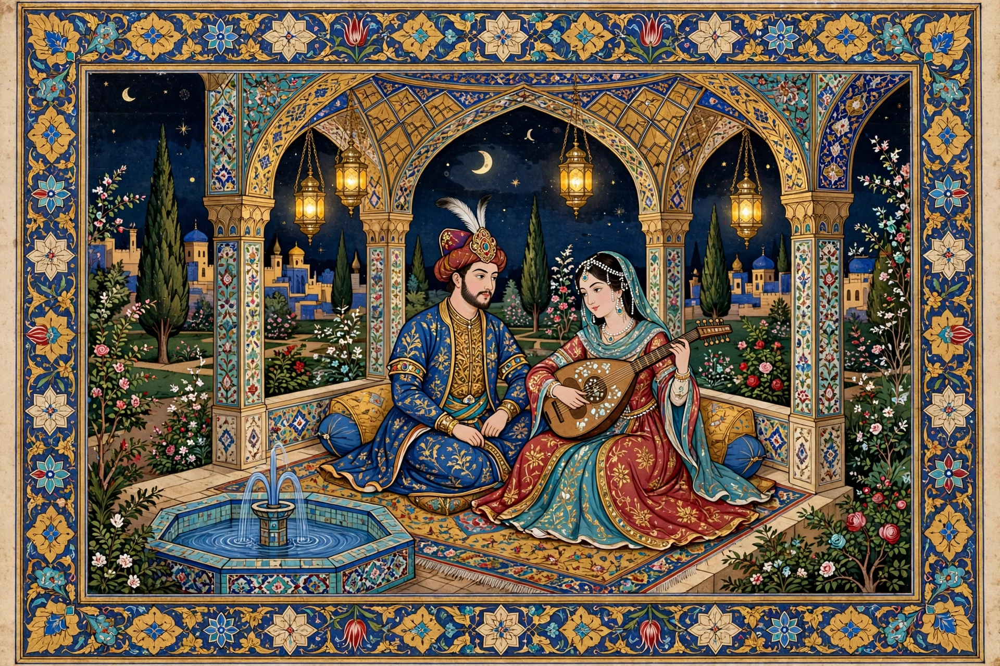
نگارهی زنده · در حرکتنورالدین و انیسالجلیس — شبی از موسیقی و مهر در باغ کاخ، زیر نور فانوسها.
در بغداد، پادشاهی بود دادگر و هنردوست به نام محمد بن سلیمان. وزیرش، خاقان، مردی نیکنهاد و خردمند بود و پسری داشت به نام نورالدین که در زیبایی و ادب و سخنوری در شهر همتا نداشت. روزی پادشاه از وزیر خواست کنیزکی برای او بخرد که در زیبایی و هنر بیمانند باشد: سواد داشته باشد، شعر بداند، عود بنوازد و از هر دانشی بهرهای برده باشد. وزیر ماهها در بازارهای بغداد گشت تا سرانجام او را یافت: دختری به نام انیسالجلیس، که نامش بهراستی برازندهاش بود؛ همنشینی دلنشین و شیرین. زیباییاش چشم را خیره میکرد، صدایش دل را میربود و در شعر و موسیقی و دانش، استاد بود. بهای او ده هزار دینار زر بود؛ وزیر پرداخت و او را به خانهی خود برد تا چند روزی بیاساید و آنگاه او را نزد پادشاه ببرد.
اما دست سرنوشت کار دیگری کرد. نورالدین، پسر وزیر، انیسالجلیس را دید و در همان نگاه نخست دل باخت؛ و انیسالجلیس نیز دل به او سپرد. نورالدین از عشق بیمار شد و پدرش چون ماجرا را دانست، دلش بر پسر سوخت. وزیر با خود گفت: پادشاه کنیزکان بسیار دارد، اما من یک پسر بیشتر ندارم. پس انیسالجلیس را به پسرش بخشید و از او پیمان گرفت که این راز را از همه پنهان دارد، تا روزی که وزیر بهانهای برای پادشاه بیابد. نورالدین و انیسالجلیس روزگاری خوش و پنهانی در کنار هم زیستند و هر روز مهرشان ژرفتر شد.
اما وزیر دشمنی داشت: وزیر دوم دربار، معین بن ساوا، مردی حسود و بدخواه که پیوسته در پی آسیب رساندن به خاقان بود. او از راز نورالدین آگاه شد و شتابان نزد پادشاه رفت و گفت: وزیرت آن کنیزک گرانبها را که با زر تو خریده بود، به پسر خودش داده است! پادشاه از خشم برآشفت و وزیر را خواست و کنیزک را طلب کرد. خاقان هراسان به خانه بازگشت و به پسرش گفت: دیگر ماندن در بغداد روا نیست؛ همین امشب با انیسالجلیس به بصره بگریز، که اگر پادشاه شما را بیابد، جان هر دو در خطر است. نورالدین و انیسالجلیس شبانه از بغداد بیرون رفتند و خود را به بصره رساندند. در بصره، باغبانی پیر که روزگاری در خانهی خاقان خدمت کرده بود، آنها را شناخت و در خانهی باغش پناه داد و چون فرزندان خود از آنان پذیرایی کرد. اما در بغداد، وزیر خاقان از اندوه و از خشم پادشاه بیمار شد و چندی نگذشت که درگذشت.
پادشاه که از مرگ وزیر هم خشمش فرو ننشسته بود، به فرمانروای بصره نامه نوشت: نورالدین را بگیر و سرش را جدا کن و کنیزک را بازپس بفرست. در بصره نیز وزیری بود که با خاقان دشمنی کهنه داشت؛ نامه را که خواند، شاد شد و بیدرنگ نورالدین را گرفت و خواست همان دم کارش را بسازد. اما مردم بصره که نورالدین را به جوانمردی و بخشندگی شناخته بودند، به خروش آمدند و نگذاشتند. باغبان پیر نیز خود را به فرمانروا رساند و چندان زاری کرد تا فرمانروا پذیرفت نورالدین را زنده، همراه انیسالجلیس، به بغداد بفرستد تا پادشاه خود داوری کند.
نورالدین و انیسالجلیس را به بغداد آوردند و پیش پادشاه بردند. پادشاه چون چشمش به انیسالجلیس افتاد و آواز دلنشین و سخن شیرینش را شنید، دانست که از دست دادن چنین گوهری حیف است؛ اما دلش از دیدن نورالدین نیز نرم شد: جوانی چنین زیبا و باوقار، که تنها گناهش دلباختن بود. انیسالجلیس با ادب و خرد، داستان مهر خود و نورالدین را گفت و از پادشاه بخشش خواست. پادشاه خشمش فرو نشست؛ نورالدین را بخشید و چون پدرش، وزیر خاقان، درگذشته بود، وزارت را به خود او سپرد و انیسالجلیس را نیز به او بخشید. چنین شد که نورالدین و انیسالجلیس، پس از آن همه بیم و گریز، در کنار هم به آرامش و بزرگی رسیدند و روزگارشان به خوشی گذشت.
این متن، بازنویسی کامل قصهی نورالدین و انیسالجلیس از هزار و یک شب است به فارسی روان و ساده؛ قصه از آغاز تا پایان گفته شده، اما با زبان امروزی و روان، نه با زبان کهن و دشوار متن اصلی کتاب. این قصه از شناختهشدهترین قصههای عاشقانهی هزار و یک شب است.
تازهقصهی نهم · بهترتیب هزار و یک شب
گانم بن ایوب و خواهرش فتنه
با صدای خودم بشنواین بخش را با صدای خودم میخوانم و ضبطش را همینجا میگذارم تا با صدای من گوش بدهی.
بهزودی
نگارهی زنده · در حرکتگانم و صندوق — شبی در گورستان، و گنجی شگفت که در دل تاریکی پیدا میشود.
در دمشق، بازرگانی بود توانگر و نامآور به نام ایوب، که چون درگذشت، از او پسری جوان به نام گانم و دختری زیبا به نام فتنه و ثروتی فراوان بر جای ماند. گانم که جوانی خوشسیما و خوشخو بود، بار کالاهای گرانبها بست و برای دادوستد راهی بغداد شد؛ شهری که خلیفه هارونالرشید در آن فرمان میراند. در بغداد کارش رونق گرفت و چندی ماندگار شد. شبی، گانم همراه گروهی برای نماز خواندن بر مردهای از شهر بیرون رفته بود و چون بازگشت، دروازههای بغداد را بسته یافت؛ ناچار شب را در گورستان بیرون شهر به سر برد.
نیمهشب، گانم از خواب پرید: سه بردهی سیاه، صندوقی بزرگ بر دوش، به گورستان آمدند، چالهای کندند، صندوق را در خاک نهادند و رفتند. گانم که از شگفتی خواب از سرش پریده بود، خاک را کنار زد و در صندوق را گشود و از آنچه دید خشکش زد: دختری جوان و بیمانند زیبا در صندوق خفته بود؛ زنده بود و نفس میکشید، اما در خوابی ژرف بود، گویی داروی خواب به او خورانده بودند. گانم صندوق را بر دوش گرفت و پیش از سپیدهدم، چون دروازهها گشوده شد، او را به خانهی خود برد و چون برادر از او پرستاری کرد تا دختر چشم گشود.
دختر چون به خود آمد، داستانش را گفت: نامش قوتالقلوب بود — «خوراک دلها» — و از کنیزکان محبوب خلیفه هارونالرشید بود. زبیده، همسر خلیفه، از رشکی که به او میبرد، در شربتش داروی خواب ریخته بود و چون همه پنداشته بودند مرده است، او را در صندوق نهاده و به بردگان سپرده بود تا پنهانی در گورستان به خاکش بسپارند، و به خلیفه گفته بودند که قوتالقلوب مرده و دفنش کردهاند. گانم از شنیدن این داستان دلش لرزید: دختری که نجاتش داده بود، از آنِ خلیفه بود. پس با آنکه هر روز مهر قوتالقلوب در دلش ریشه میدواند، او را چون امانتی گرامی داشت و هرگز از مرز ادب و امانت پا فراتر نگذاشت؛ و قوتالقلوب نیز این جوانمردی را دید و دلش بیش از پیش به او گره خورد.
روزها گذشت. گانم که کار و بازرگانی را از یاد برده بود و همهی داراییاش را در بغداد خرج کرده بود، کمکم تهیدست شد؛ و مادر و خواهرش فتنه در دمشق چشمبهراهش بودند و هیچ خبری از او نداشتند. قوتالقلوب زیورهای خود را یکیک فروخت تا خانه بیروزی نماند، و گانم از اندوه و از عشقی که نمیتوانست به زبان بیاورد، بیمار و نزار شد. در همان روزها، راز زبیده نزد خلیفه آشکار شد: هارونالرشید دانست قوتالقلوب زنده است و در خانهی بازرگانی جوان از دمشق به سر میبرد. خلیفه گانم را خواست؛ گانم هراسان و لرزان پیش خلیفه رفت و همهی داستان را، از شب گورستان تا آن روز که امانت خلیفه را چون چشم خود نگه داشته بود، راست و درست گفت.
خلیفه از وفاداری و پاکدامنی گانم به شگفت آمد و دلش از شادی پر شد. گفت: تو امانت مرا نگه داشتی و به آن دست نزدی؛ پاداشت آن است که همان امانت از آنِ تو شود. پس قوتالقلوب را به همسری گانم درآورد و خلعت و زر و خانهای باشکوه به او بخشید و او را از نزدیکان خود کرد. آنگاه گانم مادر و خواهرش فتنه را از دمشق به بغداد خواند و خانواده پس از سالها دوری و چشمانتظاری دوباره گرد هم آمدند. فتنه نیز، که زیبایی و ادبش زبانزد همه بود، به همسری خلیفه برگزیده شد و روزگار خوشی یافت. چنین بود پاداش جوانمردی و امانتداری گانم بن ایوب؛ مردی که در تاریکترین شب، در گورستان، گنجی یافت و چون امانت نگهش داشت تا سرانجام از آنِ خودش شد.
این متن، بازنویسی کامل قصهی گانم بن ایوب و خواهرش فتنه از هزار و یک شب است به فارسی روان و ساده؛ قصه از آغاز تا پایان گفته شده، اما با زبان امروزی و روان، نه با زبان کهن و دشوار متن اصلی کتاب. گانم را در کتاب «بندهی عشق» هم خواندهاند، از بس که عشق و وفاداریاش نامآور است.
شبها به ترتیب هزار و یک شب
شهرزاد و شهریار — داستان چارچوب کتابمنتشر شد
تاجر و عفریتمنتشر شد
ماهیگیر و جنمنتشر شد
سه سیبدر راه
نورالدین علی و پسرش بدرالدین حسندر راه
حمال و سه بانومنتشر شد
خیاط و گوژپشتمنتشر شد
نورالدین و انیسالجلیستازهمنتشر شد
گانم بن ایوب و خواهرش فتنهتازهمنتشر شد
قصهها از شب یکم و به همین ترتیب، یکییکی منتشر میشن؛ هرکدام گزیدهای از همان قصه به فارسی روان، با نگارهی ویژهی خودش.
قصههای یکم تا سوم و ششم تا نهم منتشر شد؛ قصهی بعدی: سه سیب.
جشنهای ایران کهن
گاهشمار جشنهای کهن ایرانی — سال ۱۴۰۵، برابر با ۲۵۸۵ شاهنشاهی
در ایران کهن، هر ماه از سال جشنی داشت؛ بیشتر جشنها روزی برگزار میشدند که نام روز و ماه یکی میشد. این گاهشمار، جشنها و مناسبتهای آیینی زرتشتی سال ۱۴۰۵ خورشیدی — برابر با سال ۲۵۸۵ شاهنشاهی — را ماهبهماه و به ترتیب نشان میدهد؛ از نوروز در فروردین تا چهارشنبهسوری در اسفند، همراه با شش گاهنبار سال و روزهای نبر هر ماه.
فروردین۱۴۰۵ · ۲۵۸۵ شاهنشاهی
نوروز · یکم فروردین
بزرگترین و کهنترین جشن ایرانیان و آغاز سال نو؛ روزی که بهار از راه میرسد و زمین دوباره زنده میشود. خانهتکانی، سفرهی هفتسین و دید و بازدید، از آیینهای دوستداشتنی نوروزند.
زادروز زرتشت · ششم فروردین
ششمین روز سال، زادروز اشو زرتشت، پیامبر ایران کهن، است و زرتشتیان این روز را با نیایش و شادی جشن میگیرند.
فروردینگان · نوزدهم فروردین
روزی برای یاد کردن از فروهرها، روان نیاکان و درگذشتگان؛ مردم به آرامگاهها میروند و برای شادی روان رفتگانشان نیایش میکنند.
اردیبهشت۱۴۰۵ · ۲۵۸۵ شاهنشاهی
اردیبهشتگان · سوم اردیبهشت
اردیبهشت ایزد راستی و پاکی و نگهبان آتش است. در این جشن، مردم با پوشش سپید به آتشکدهها میروند و راستی و درستی را گرامی میدارند.
گاهنبار میدیوزرمگاه · یازدهم تا پانزدهم اردیبهشت
نخستین گاهنبار سال، در میانهی بهار؛ جشن سپاس برای آفرینش آسمان. گاهنبارها پنج روزهاند و با نیایش، خواندن اوستا و سفرهی همگانی برگزار میشوند و خوراکشان میان همه پخش میشود.
خرداد۱۴۰۵ · ۲۵۸۵ شاهنشاهی
خردادگان · ششم خرداد
خرداد ایزد رسایی و تندرستی و نگهبان آبهاست. خردادگان جشن رسیدن به رسایی و آرزوی سالی پر از تندرستی و فراوانی است.
تیر۱۴۰۵ · ۲۵۸۵ شاهنشاهی
تیرگان · سیزدهم تیر
جشن باران و ایزد تیشتر که بر دیو خشکسالی پیروز میشود. تیرگان را با یاد آرش کمانگیر هم پیوند میدهند؛ پهلوانی که جانش را بر سر یک تیر گذاشت تا مرز ایران را نشانه کند. آب پاشیدن بر یکدیگر از آیینهای شاد این جشن است.
گاهنبار میدیوشهمگاه · یازدهم تا پانزدهم تیر
دومین گاهنبار، در میانهی تابستان؛ جشن سپاس برای آفرینش آب، که با نیایش و سفرهی گاهنباری در آتشکدهها و خانهها برگزار میشود.
امرداد۱۴۰۵ · ۲۵۸۵ شاهنشاهی
امردادگان · هفتم امرداد
امرداد ایزد جاودانگی و نگهبان گیاهان و رستنیهاست. نام این ماه یعنی «بیمرگی»؛ و جشنش در دل تابستان، جشن زندگی، سرسبزی و ماندگاری است.
شهریور۱۴۰۵ · ۲۵۸۵ شاهنشاهی
شهریورگان · چهارم شهریور
شهریور ایزد نگهبان فلزها و نماد شهریاری دادگر و آسمانی است. شهریورگان را جشن داد و دادگری و پاسداشت کوشش و کار میدانند.
گاهنبار پیتیشهمگاه · بیستوششم تا سیام شهریور
سومین گاهنبار، در پایان تابستان و هنگام گردآوری فرآوردهها؛ جشن سپاس برای آفرینش زمین و برداشت کشتزار.
مهر۱۴۰۵ · ۲۵۸۵ شاهنشاهی
مهرگان · شانزدهم مهر
پس از نوروز، بزرگترین جشن ایران کهن است؛ جشن مهر، ایزد پیمان و نور و دوستی، و هنگام سپاسگزاری برای برداشت فرآوردههای کشتزار. در مهرگان مردم به یکدیگر مهر میورزند و پیمانهایشان را تازه میکنند.
گاهنبار ایاثرمگاه · بیستوششم تا سیام مهر
چهارمین گاهنبار، در میانهی پاییز و هنگام بازگشت گلهها از چراگاه؛ جشن سپاس برای آفرینش گیاهان و رستنیها.
آبان۱۴۰۵ · ۲۵۸۵ شاهنشاهی
آبانگان · دهم آبان
جشن آبها و آناهیتا، ایزدبانوی آبهای روان و پاکی. در آبانگان، آب و چشمه و رود گرامی داشته میشود و برای فراوانی و باروری نیایش میکنند.
آذر۱۴۰۵ · ۲۵۸۵ شاهنشاهی
آذرگان · نهم آذر
آذر ایزد آتش است و آذرگان جشن آتش؛ در آستانهی زمستان، آتش افروخته میشود و گرما و روشنایی آن در خانهها و آتشکدهها گرامی داشته میشود.
دی۱۴۰۵ · ۲۵۸۵ شاهنشاهی
شب یلدا (چله) · شبِ پیش از یکم دی
بلندترین شب سال که خانوادهها گرد هم میآیند، انار و هندوانه میخورند و حافظ میخوانند تا تاریکی بلندترین شب با گرمای دورهمی کوتاه شود و روشنایی از فردا کمکم بر شب پیروز شود.
دیگان و خرمروز · یکم دی
یکم دی، خرمروز، نخستین جشن دیگان است؛ روزهای یکم، هشتم، پانزدهم و بیستوسوم ماه دی، نام روز و ماه یکی میشود و این روزها را با شادی و نیایش جشن میگیرند و زمستان را آغاز میکنند.
دیگان · هشتم دی
دومین جشن دیگان؛ روز دیبهآذر از ماه دی که باز نام روز و ماه یکی میشود و با نیایش و شادی گرامی داشته میشود.
گاهنبار میدیارمگاه · دهم تا چهاردهم دی
پنجمین گاهنبار، در میانهی زمستان؛ جشن سپاس برای آفرینش جانوران سودمند، که با نیایش و سفرهی همگانی برگزار میشود.
درگذشت اشو زرتشت · یازدهم دی
یازدهم دی، روز خور از ماه دی، روز درگذشت اشو زرتشت است. زرتشتیان این روز را با نیایش و رفتن به آتشکده و آرامگاه، در سکوت و احترام به یاد پیامبرشان میگذرانند.
دیگان · پانزدهم دی
سومین جشن دیگان؛ روز دیبهمهر از ماه دی، از روزهای همنام روز و ماه در زمستان.
دیگان · بیستوسوم دی
چهارمین و واپسین جشن دیگان؛ روز دیبهدین از ماه دی که ماه دی را با شادی و نیایش به پایان میبرد.
بهمن۱۴۰۵ · ۲۵۸۵ شاهنشاهی
بهمنگان · دوم بهمن
بهمن یا وهومن، ایزد اندیشهی نیک است. بهمنگان جشن اندیشه و خرد نیک و روز پاسداشت جانوران سودمند است؛ در این روز از کشتن جانوران و خوردن گوشت پرهیز میکردند.
سده · دهم بهمن
جشن بزرگ آتش و یاد پیدایش آن به دست هوشنگ در سرگذشتهای شاهنامه؛ پنجاه روز مانده به نوروز، بر فراز بلندیها آتش میافروزند و گرد آن شادی میکنند. آتش سده را هنگام غروب روز نهم بهمن، در آستانهی روز مهر، میافروزند.
اسفند۱۴۰۵ · ۲۵۸۵ شاهنشاهی
اسفندگان (سپندارمذگان) · پنجم اسفند
جشن سپندارمذ، ایزدبانوی زمین و فروتنی و مهر. در ایران کهن این روز، روز گرامیداشت زمین و زنان بود و به جشن مهر و مهربانی شناخته میشود.
گاهنبار همسپثمیدیمگاه · پنج روز پایانی اسفند
ششمین و واپسین گاهنبار، در پنج روز پایانی سال؛ جشن سپاس برای آفرینش انسان و هنگام یاد فروهرهای درگذشتگان، در آستانهی نوروز.
چهارشنبهسوری · واپسین شب چهارشنبهی سال
در شامگاه واپسین سهشنبهی سال، آتش میافروزند و از روی آن میپرند و میخوانند: «زردی من از تو، سرخی تو از من»؛ یعنی بیماری و اندوه را به آتش میسپارند و گرما و تندرستی از او میگیرند و آمادهی نوروز میشوند.
روزهای نبر — چهار روز در هر ماه
در آیین زرتشتی، در هر ماه چهار روز «نبر» است؛ یعنی روزهایی که گوشت نمیخورند و هیچ جانوری را نمیکشند، از مهر به جانوران و پاسداشت زندگی. این چهار روز در گاهشمار، روی روزهای دوم، دوازدهم، چهاردهم و بیستویکم هر ماه نشستهاند.
روز نبر (روز بهمن) · دوم هر ماه
روز بهمن، دوم هر ماه، روز نبر است؛ بهمن ایزد اندیشهی نیک و نگهبان جانوران سودمند است و در این روز از خوردن گوشت و کشتن جانوران پرهیز میشود.
روز نبر (روز ماه) · دوازدهم هر ماه
روز ماه، دوازدهم هر ماه، روز نبر است؛ روزی برای آرامش و پرهیز از گوشت و کشتار، به پاسداشت جانوران.
روز نبر (روز گوشت) · چهاردهم هر ماه
روز گوشت، چهاردهم هر ماه، روز نبر است؛ این روز به روان جانوران (گئوش اوروان) ویژه است و در آن گوشت نمیخورند و جانوری نمیکشند.
روز نبر (روز رام) · بیستویکم هر ماه
روز رام، بیستویکم هر ماه، روز نبر است؛ رام ایزد آشتی و شادی است و این روز هم با پرهیز از گوشت و کشتن جانوران گرامی داشته میشود.
بیشتر این جشنها «روز و ماه همنام» هستند؛ یعنی روزی از ماه که نامش با نام همان ماه یکی میشود، مانند روز امرداد از ماه امرداد.
در گاهشمار شاهنشاهی همین سایت، همهی این روزها — جشنهای ماهانه، شش گاهنبار، روزهای نبر و مناسبتهای ویژه — روی روزهای هر ماه نشستهاند؛ روی نام هر ماه بزن تا روزهایش را با توضیح کوتاهشان ببینی.
با زدن دکمهی «یادآوری»، یک پروندهی کوچکِ تقویم بارگیری میشود؛ آن را روی گوشیات باز کن و «افزودن به تقویم» را بزن تا آن روز در تقویم گوشیات بنشیند و یک روز پیش از آن به تو یادآوری شود. این یادآوری از سوی تقویم گوشی خودت میآید؛ برای آگاه شدن از بخشهای تازهی خود سایت هم زنگ آگاهسازی را در صفحهی خانه یا بخش اپلیکیشن فعال کن.
یادگارهای ماندگار ایرانزمین
یادگارهای باستانی ایران — از کهنترین شهرها تا آتشکدهها
ایرانزمین از کهنترین کانونهای آبادانی در جهان است؛ از شهرهایی پنج هزار ساله گرفته تا کاخها و آتشکدههایی که هنوز بر پای کوه و کنار رود ایستادهاند. در این بخش، مهمترین یادگارهای باستانی ایران را به ترتیب روزگارشان میبینی؛ هر کدام با نشانی و داستانی کوتاه. بسیاری از آنها در فهرست میراث جهانی یونسکو هم جای گرفتهاند.
کاشان · از نزدیک به ۵۰۰۰ پیش از میلاد
تپههای سیلک
سیلک در کاشان، از کهنترین جاهای زندگی مردمان در ایران است؛ نزدیک هفت هزار سال پیش، مردم در آن خانه ساختند و سفال پختند. بر تپهی نیمروزیاش زیگوراتی خشتی و بزرگ ایستاده که از کهنترین نیایشگاههای ایران به شمار میرود.
در نزدیکی دامغان، تپهی حصار یکی از کهنترین جاهای زندگی مردمان در ایران است؛ نزدیک شش هزار سال پیش، مردم اینجا خانه ساختند، سفال پختند و فلز گداختند. در گورها و خانههایش گنجینههایی از سفالهای خاکستری براق و زیورهای سنگی و مسی پیدا شده که نشان از شهری آباد و بازرگانی پررونق دارد.
در نزدیکی زابلِ سیستان، یکی از پیشرفتهترین شهرهای روزگار مفرغ برپا بود. کهنترین چشم دستساخته جهان و یکی از نخستین تختهبازیها در آن پیدا شده؛ و جام سفالیای که بزش، قاببهقاب، نخستین پویانمایی جهان را میسازد. شهر چند بار سوخت و از نو ساخته شد و همین شد که «شهر سوخته» نام گرفت.
در جنوب کرمان، در نزدیکی جیرفت، تپههای کنار صندل یادگار تمدنی بزرگ از هزارهی سوم پیش از میلادند؛ تمدنی که تا چندی پیش جهان از آن بیخبر بود. کوزهها و پیکرههایش از سنگ سبز کلریت، با نقش بز و نخل و جانوران افسانهای، از شگفتترین ساختههای آن روزگارند و گمان میرود اینجا همان سرزمین کهن «ارتّه» باشد که در نوشتههای سومری از آن یاد شده است.
این زیگورات بزرگ در نزدیکی شوش را اونتاش ناپیریشا، شاه ایلام، برای ایزد اینشوشیناک ساخت. روزگاری پنج طبقه و نزدیک ۵۲ متر بلندا داشت و در سال ۱۹۷۹ میلادی، نخستین یادگار ایران شد که در فهرست میراث جهانی یونسکو جا گرفت.
بر تپهای سبز در نزدیکی رودبار گیلان، گورستانی شاهانه از نزدیک سه هزار سال پیش پیدا شد؛ گورهایی پر از جامها و زیورهای زرین. نامآورترینشان جامی زرین است که گاوهای بالدار بر بدنهاش گرد درخت زندگی ایستادهاند؛ از شاهکارهای زرگری جهان کهن.
آذربایجان غربی · عصر آهن، نزدیک به ۹۰۰ پیش از میلاد
تپهی حسنلو و جام زرینش
حسنلو در نزدیکی نقده، شهری آباد در عصر آهن بود که نزدیک به ۸۰۰ پیش از میلاد در آتش جنگ سوخت و ویران شد. جام زرین نامآورش، با صحنههایی از سرگذشت ایزدان و پهلوانان بر بدنهاش، در آغوش سربازی افتاده پیدا شد و امروز از گنجینههای نامآور ایران است.
شوش از کهنترین شهرهای جهان است: پایتخت ایلام و پایتخت زمستانی شاهان هخامنشی. داریوش بزرگ کاخ آپادانایش را با ستونهای بلند سنگی در اینجا ساخت؛ و ستون سنگی قانون حمورابی هم در کاوشهای همین شوش پیدا شد.
بر تپهای در نزدیکی ملایر، دژ و آتشکدهای از روزگار مادها برپاست؛ از کهنترین آتشکدههای ایران که آتشدان و تالارهای خشتیاش هنوز دیده میشوند. نوشیجان از سالمترین یادگارهای روزگار ماد است و امروز سایبانی بزرگ از آن نگهبانی میکند.
بر تپهای در نزدیکی سقز، دژ زیویه در روزگار مانناییها و مادها برپا بود. در سال ۱۳۲۶ خورشیدی، گنجینهای شگفت از زر و سیم و عاج در دل این تپه پیدا شد: سینهبندها و پلاکهای زرین با نقش جانوران درهمتنیده، که از شاهکارهای هنر آن روزگارند و امروز در موزههای ایران و جهان نگه داشته میشوند.
هگمتانه در همدان امروزی، پایتخت مادها و پایتخت تابستانی شاهان هخامنشی بود و هرودوت از هفت دیوار رنگینش نوشته است. امروز تپه و خیابانهای کاوششده و موزهاش دیدنی است و در سال ۲۰۲۴ میلادی به فهرست میراث جهانی یونسکو پیوست.
پاسارگاد نخستین پایتخت شاهنشاهی هخامنشی است که کوروش بزرگ بنیادش گذاشت. آرامگاه او — اتاقکی سنگی بر سکویی ششپلهای — ساده و در همان حال باشکوه است؛ و باغهای پاسارگاد، سرآغاز باغ ایرانی و چهارباغاند.
تخت جمشید پایتخت آیینی شاهان هخامنشی بود و داریوش بزرگ ساختنش را نزدیک به ۵۱۵ پیش از میلاد آغاز کرد. تالار آپادانایش بر ۷۲ ستون برپا بود و بر پلکانهایش، مردمان شاهنشاهی هنوز در سنگ صف کشیدهاند و برای شاه پیشکش میآورند؛ اینجا جایگاه نوروز شاهان بود.
در دل کوه، روبهروی تخت جمشید، آرامگاههای چلیپاییشکل داریوش بزرگ، خشایارشا، اردشیر یکم و داریوش دوم کنده شدهاند. زیر پایشان نقشبرجستههای ساسانی میدرخشند؛ از جمله پیروزی شاپور بر امپراتور روم. روبهرویشان هم کعبهی زرتشت ایستاده، برج سنگی چهارگوش و رازآلود.
بر سینهی کوه بیستون، داریوش بزرگ داستان پیروزیهایش را به سه زبان و سه دبیره — فارسی باستان، ایلامی و بابلی — بر سنگ نوشت. همین سنگنبشته بود که کلید خواندن دبیرهی میخی را به دست جهان داد.
در دل کوه الوند، بر سر راه کهن همدان، دو سنگنبشتهی بزرگ بر سنگ خارا کنده شده است: یکی از داریوش بزرگ و دیگری از پسرش خشایارشا، هر دو به سه زبان و سه دبیرهی میخی. مردمان روزگارهای پسین پنداشتند اینجا نشانی گنجی پنهان است و همین شد که «گنجنامه» نام گرفت.
سکوی سنگی پهناور کنگاور با ستونهای ستبرش، پس از تخت جمشید دومین بنای سنگی بزرگ ایران است و به آناهیتا، ایزدبانوی آبها، دانسته میشود. اینکه در روزگار اشکانی ساخته شده یا ساسانی، هنوز میان پژوهشگران جای گفتوگوست.
در دل کوهی در نزدیکی دیواندره، خانههایی سنگی در چند طبقه کنده شدهاند؛ اتاقها و دالانهایی که روزگاری هم خانه بودند و هم نیایشگاه. بر دیوار یکی از اتاقها، سنگنبشتهای یونانی میگوید: «اینجا خانهی هراکلس است»؛ یادگاری از روزگار اشکانی، وقتی آیینهای ایرانی و یونانی در کنار هم میزیستند.
شبکهای شگفت از بندها، پلها، آبراههها و آسیابهای آبی بر رود کارون؛ ریشهاش به روزگار هخامنشی میرسد و در روزگار ساسانی به اوج رسید، وقتی بند قیصر به فرمان شاپور یکم و به دست گرفتاران رومی ساخته شد. این سازهها در فهرست میراث جهانی یونسکو جای گرفتهاند.
گرداگرد دریاچهای ژرف و همیشهجوشان، در دل دژی بیضیشکل، آتشکدهی آذرگشسب برپا بود؛ یکی از سه آتش بزرگ ایران ساسانی و آتش شاهان و جنگاوران، که شاهان پیش از نبرد به دیدارش میرفتند. تخت سلیمان در فهرست میراث جهانی یونسکو جای گرفته است.
اردشیر بابکان، بنیانگذار شاهنشاهی ساسانی، نخستین پایتختش را اینجا با پیکرهای گرد ساخت. کاخش در کنار چشمه، از کهنترین گنبدها و ایوانهای آن روزگار را دارد و قلعهدختر از فراز کوه، نگهبان تنگه است.
شاپور یکم بیشاپور را پس از پیروزی بر روم با ریختی چهارخانه بنیاد گذاشت. معبد آناهیتایش در دل زمین ساخته شده و آب در آن روان است؛ و در تنگ چوگانِ نزدیک شهر، شش نقشبرجستهی بزرگ، پیروزیهای شاپور بر امپراتوران روم را جشن گرفتهاند.
در نزدیکی شوش، بر کرانهی رود کرخه، ویرانههای شهری ساسانی خفته است که شاپور دوم آن را بنیاد گذاشت. دیوارهای ستبر و بلندش هنوز برپاست و در دل شهر، ایوانی بزرگ و گنبددار جای داشت؛ ایوان کرخه از بزرگترین شهرهای ساختهی روزگار ساسانی در خوزستان بود.
کاخ سروستان در دشتهای فارس، بنایی سنگی از روزگار ساسانی است که گنبد بزرگش بر تالاری چهارگوش نشسته؛ از نمونههای نامآور گنبدسازی ساسانی. این کاخ در فهرست میراث جهانی یونسکو، در میان چشمانداز باستانی ساسانی فارس، جای گرفته است.
این ایوانهای سنگی در دل کوه و کنار چشمهای در کرمانشاه، تاجگذاری شاهان ساسانی را نشان میدهند و در ایوان بزرگ، خسروپرویز سوار بر اسبش شبدیز به شکار رفته است؛ از واپسین شاهکارهای هنر ساسانی.
بر فراز کوه ماربین در باختر اصفهان، بنایی گرد و خشتی از روزگار ساسانی ایستاده که آتش ورجاوند در آن میسوخت و از دوردست دیده میشد. امروز آتشگاه از نمادهای کهن شهر اصفهان است.
بر فراز بلندیهای نیاسر، در نزدیکی کاشان، چهارطاقیای سنگی از روزگار ساسانی ایستاده است؛ بنایی چهارگوش با چهار طاق گشاده و گنبدی بر فرازشان که آتش ورجاوند در دلش میسوخت. آتشکدهی نیاسر از سالمترین و زیباترین چهارطاقیهای بهجا مانده از ایران باستان است و از فرازش، باغها و کوههای پیرامون دیده میشوند.
در نزدیکی مانه و سملقان، بنایی سنگی و تنها در دل دشت ایستاده است: آتشکدهی اسپاخو، از کهنترین بناهای سنگی شمالشرق ایران. دیوارهای ستبرش از سنگ و گچ ساخته شده و تالار گنبددار و ایوانش هنوز دیده میشوند؛ یادگاری از روزگار ساسانی در سرزمین خراسان.
ارگ بم بزرگترین بنای خشتی جهان است؛ دژی کهن بر سر راه ابریشم که ریشههایش به روزگار اشکانی و ساسانی میرسد. زمینلرزهی سال ۱۳۸۲ آن را سخت زخمی کرد و از آن روز بازسازیاش همچنان در کار است. ارگ بم در فهرست میراث جهانی یونسکو جای گرفته است.
بر فراز دو تپه در بیرون شهر یزد، برجهایی گرد و بیسقف ایستادهاند. زرتشتیان به آیین کهن، برای آنکه خاک و آب و آتش پاک بمانند، پیکر مردگان را بر فراز دخمه میگذاشتند تا به آسمان بازگردد. دخمههای کنونی بیشتر از روزگار صفوی و قاجارند، اما آیینشان به ایران باستان میرسد و نزدیک نیم سده است که در ایران کنار نهاده شده.
ایران از ابتدا — همهی دودمانها و شاهان پیش از اسلام
از ایلام، سه هزار سال پیش از میلاد، تا واپسین شاه ساسانی، اینجا همهی دودمانهایی را میبینی که پیش از اسلام بر ایران فرمان راندند؛ به ترتیب روزگارشان، با نام شاهان هر دودمان و سالهای فرمانروایی آنها. پیش از همهی اینها، در آغاز افسانهای سرگذشت ایران، دودمانهای پیشدادی و کیانیاند — کیومرث و هوشنگ و جمشید و فریدون، و کیقباد و کیکاووس و کیخسرو — که سرگذشتشان را در بخش شاهنامه میخوانی. سرگذشتِ نوشتهشده اما از ایلام آغاز میشود:
جنوبغرب ایران · نزدیک به ۲۷۰۰ تا ۵۳۹ پیش از میلاد
ایلام — کهنترین تمدن ایران
ایلام در خوزستان و فارسِ امروز، همسایه و هماورد دیرینهی سومر و بابل بود و پایتختش شوش از کهنترین شهرهای جهان است. نام شاهان نخستینش تنها در فهرستهای کهن مانده، اما نامآورترین شاهان ایلام اینهایند؛ از سازندهی چغازنبیل تا واپسین شاهانی که برابر آشور ایستادند:
دودمانهای نخستین: آوان و شیماشکی، از نزدیک به ۲۷۰۰ پیش از میلاد
اپارتینزدیک به ۱۹۷۰ ق.مبنیانگذار دودمان سوکلمخها
شیلهههسدهی ۱۹ ق.م
کوکناشور دومسدهی ۱۷ ق.م
ایلام میانه
ایگیههالکی یکمنزدیک به ۱۴۰۰ ق.م
اونتاش ناپیریشانزدیک به ۱۲۷۵ تا ۱۲۴۰ ق.مسازندهی زیگورات چغازنبیل
او شهری تازه به نام دوراونتاش ساخت و در دلش زیگورات چغازنبیل را برپا کرد؛ نیایشگاهی پلکانی که پس از بیش از سه هزار سال هنوز برپاست. در روزگار او ایلام نیرومند و آباد بود و هنر و ساختن در آن شکوفا شد.
شوتروک ناهونته یکمنزدیک به ۱۱۸۵ تا ۱۱۵۵ ق.م
شوتروک ناهونته بزرگترین کشورگشای ایلام بود؛ بابل را گرفت و گنجینههای نامآورش، از جمله ستون سنگی قانون حمورابی، را به شوش آورد — همان ستونی که امروز در موزهی لوور است. او ایلام را به اوج نیرو رساند.
کوتیر ناهونتهنزدیک به ۱۱۵۵ تا ۱۱۵۰ ق.م
شیلهک اینشوشیناکنزدیک به ۱۱۵۰ تا ۱۱۲۰ ق.م
هوتلوتوش اینشوشیناکنزدیک به ۱۱۲۰ تا ۱۱۱۰ ق.م
ایلام نو
هومبان نیکش یکم۷۴۳ تا ۷۱۷ ق.م
شوتور ناهونته دوم۷۱۷ تا ۶۹۹ ق.م
هالوشو۶۹۹ تا ۶۹۳ ق.م
کوتیر ناهونته دوم۶۹۳ تا ۶۹۲ ق.م
هومبان نیمنا۶۹۲ تا ۶۸۷ ق.م
هومبان هالتاش یکم۶۸۷ تا ۶۸۱ ق.م
هومبان هالتاش دوم۶۸۱ تا ۶۷۵ ق.م
اورتک۶۷۵ تا ۶۶۴ ق.م
تمپت هومبان اینشوشیناک۶۶۴ تا ۶۵۳ ق.م
هومبان نیکش دوم۶۵۳ تا ۶۵۱ ق.م
در ۶۴۶ ق.م آشوربانیپال، شاه آشور، شوش را گرفت و ویران کرد؛ ایلام کمکم زیر سایهی ماد و پارس رفت و سرانجام بخشی از شاهنشاهی کوروش شد.
نزدیک به ۷۲۸ تا ۵۵۰ پیش از میلاد · پایتخت: هگمتانه
مادها — نخستین شاهنشاهی ایرانی
مادها نخستین قوم ایرانیاند که دولتی بزرگ و یکپارچه ساختند و پایتختشان هگمتانه، همدانِ امروز، بود. نام و سالهای شاهان ماد را بیشتر از نوشتههای هرودوت، سرگذشتنویس یونانی، میشناسیم:
دیاکونزدیک به ۷۲۸ تا ۶۷۵ ق.مبنیانگذار پادشاهی ماد
دیاکو نخست داوری دادگر میان مادها بود و مردم او را به شاهی برگزیدند. او قومهای پراکندهی ماد را یکپارچه کرد و هگمتانه را با هفت دیوار رنگین ساخت و پایتخت خود کرد؛ اینگونه نخستین پادشاهی ایرانی آغاز شد.
فرورتیش۶۷۵ تا ۶۵۳ ق.م
میانپردهی سکاها: از ۶۵۳ تا ۶۲۵ ق.م سکاها بر ماد چیره بودند
هووخشتره۶۲۵ تا ۵۸۵ ق.مبا بابل همپیمان شد و در ۶۱۲ ق.م نینوا، پایتخت آشور، را برانداخت
هووخشتره تواناترین شاه ماد بود؛ سپاهی سامانیافته ساخت، سکاها را از ماد بیرون راند و با بابل همپیمان شد. در ۶۱۲ پیش از میلاد نینوا، پایتخت آشور، را گرفت و به شاهنشاهی کهن آشور پایان داد و ماد را بزرگترین نیروی روزگارش کرد.
ایشتوویگو۵۸۵ تا ۵۵۰ ق.مواپسین شاه ماد؛ کوروش بزرگ او را شکست داد و هگمتانه را گرفت
۵۵۰ تا ۳۳۰ پیش از میلاد · از کوروش بزرگ تا داریوش سوم
هخامنشیان — نخستین شاهنشاهی بزرگ جهان
کوروش بزرگ از این دودمان برخاست و شاهنشاهیای ساخت که از رود سند تا دریای مدیترانه میرسید. نیاکان او پیش از شاهنشاهی، شاهان انشان در سرزمین فارس بودند. فهرست شاهان هخامنشی، از بنیانگذار دودمان تا واپسین شاه:
هخامنشنزدیک به ۷۰۵ تا ۶۷۵ ق.مبنیانگذار دودمان؛ شاه انشان در فارس
چیشپش۶۷۵ تا ۶۴۰ ق.م
کوروش یکم۶۴۰ تا ۶۰۰ ق.م
کمبوجیه یکم۶۰۰ تا ۵۵۹ ق.م
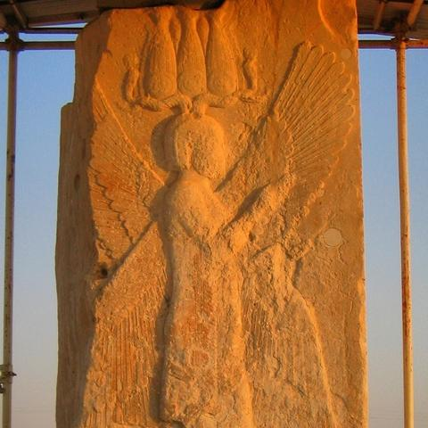
کوروش بزرگ۵۵۹ تا ۵۳۰ ق.مبنیانگذار شاهنشاهی؛ کشورگشای بابل و لیدیه
کوروش بزرگ بنیانگذار شاهنشاهی هخامنشی است؛ ماد، لیدیه و بابل را گرفت و بزرگترین شاهنشاهی روزگارش را ساخت. او با مردمان سرزمینهای گرفتهشده به داد و نرمی رفتار میکرد و نامش در کتابهای کهن جهان با نیکی مانده است. آرامگاه سادهاش در پاسارگاد است و این نقشبرجستهی بالدار پاسارگاد از روزگار اوست.
کمبوجیه دوم۵۳۰ تا ۵۲۲ ق.مکشورگشای مصر
بردیا و گئومات مغ۵۲۲ ق.مگئومات مغ خود را بردیا، برادر کمبوجیه، خواند و چند ماه بر تخت نشست
داریوش بزرگ۵۲۲ تا ۴۸۶ ق.مسازندهی تخت جمشید؛ نویسندهی سنگنبشتهی بیستون
داریوش بزرگ شاهنشاهی را سامان داد: سرزمینها را به استانهایی با فرمانروای ویژه بخش کرد، راه شاهی و پیک تیزرو ساخت، سکهی زرین دریک را رواج داد و قانونی یکسان برای همه نوشت. او ساختن تخت جمشید را آغاز کرد و داستان بر تخت نشستنش را بر سنگنبشتهی بیستون به سه زبان کند.
خشایارشا یکم۴۸۶ تا ۴۶۵ ق.م
خشایارشا پسر داریوش بزرگ بود و کار ساختن تخت جمشید را پی گرفت؛ دروازهی ملل و تالارهای بزرگش از یادگارهای اوست. او با سپاهی بزرگ به یونان لشکر کشید و نامش در داستان نبردهای نامآوری چون ترموپیل و سالامیس ماند.
اردشیر یکم۴۶۵ تا ۴۲۴ ق.م
خشایارشا دوم۴۲۴ ق.م
سغدیان۴۲۴ تا ۴۲۳ ق.م
داریوش دوم۴۲۳ تا ۴۰۴ ق.م
اردشیر دوم۴۰۴ تا ۳۵۸ ق.م
اردشیر سوم۳۵۸ تا ۳۳۸ ق.م
ارسس۳۳۸ تا ۳۳۶ ق.م
داریوش سوم۳۳۶ تا ۳۳۰ ق.مواپسین شاه هخامنشی؛ اسکندر مقدونی شاهنشاهی را برانداخت
۳۱۲ تا ۶۴ پیش از میلاد · جانشینان اسکندر
سلوکیان — روزگار پس از اسکندر
اسکندر مقدونی در ۳۳۰ پیش از میلاد شاهنشاهی هخامنشی را برانداخت و در ۳۲۳ درگذشت. پس از او، سردارش سلوکوس بر ایران و میانرودان دست یافت و دودمانی یونانیتبار بنیاد گذاشت. شاهان سلوکی که بر ایران فرمان راندند:
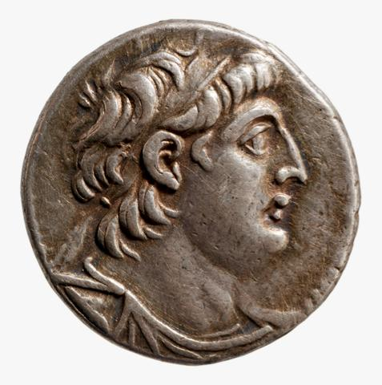
سلوکوس یکم نیکاتور۳۱۲ تا ۲۸۱ ق.مبنیانگذار دودمان؛ از سرداران اسکندر
سلوکوس یکم از سرداران اسکندر بود؛ پس از مرگ او بر بابل و ایران دست یافت و دودمان سلوکی را بنیاد گذاشت. او شهرهای تازهی بسیاری ساخت، از جمله سلوکیه در کنار دجله، و قلمروش از سوریه تا مرز هند میرسید. این نگاره، چهرهی او بر سکههایش است.
آنتیوخوس یکم سوتر۲۸۱ تا ۲۶۱ ق.م
آنتیوخوس دوم تئوس۲۶۱ تا ۲۴۶ ق.م
سلوکوس دوم کالینیکوس۲۴۶ تا ۲۲۵ ق.م
سلوکوس سوم۲۲۵ تا ۲۲۳ ق.م
آنتیوخوس سوم بزرگ۲۲۳ تا ۱۸۷ ق.م
آنتیوخوس سوم را «بزرگ» خواندند، چون شاهنشاهی رو به زوال سلوکی را دوباره نیرومند کرد؛ تا باختر و مرز هند لشکر کشید و سرزمینهای ازدسترفته را بازپس گرفت. در پایان با روم درگیر شد و از آن شکست خورد. این نگاره، چهرهی او بر سکههایش است.
سلوکوس چهارم فیلوپاتور۱۸۷ تا ۱۷۵ ق.م
آنتیوخوس چهارم اپیفانس۱۷۵ تا ۱۶۴ ق.م
آنتیوخوس پنجم۱۶۴ تا ۱۶۲ ق.م
دیمتریوس یکم سوتر۱۶۲ تا ۱۵۰ ق.م
از ۱۴۱ ق.م، که مهرداد یکم اشکانی بابل را گرفت، ایران از دست سلوکیان بیرون رفت؛ شاهان پسین این دودمان تنها بر سوریه فرمان راندند تا روم در ۶۴ ق.م به کارشان پایان داد.
۲۴۷ پیش از میلاد تا ۲۲۴ میلادی · نزدیک پنج سده
اشکانیان — شاهنشاهی پارت
ارشکیان از سرزمین پارت، در خراسانِ امروز، برخاستند و ایران را از سلوکیان بازپس گرفتند. شاهنشاهی اشکانی نزدیک پنج سده همسایه و هماورد بزرگ روم بود و پایتختش تیسفون، کنار دجله. چون نوشتههای این روزگار کم است، سالهای برخی شاهان میانی چندان روشن نیست. شاهان اشکانی:
ارشک یکم۲۴۷ تا ۲۱۷ ق.مبنیانگذار دودمان اشکانی
ارشک دوم۲۱۷ تا ۱۹۱ ق.م
فریاپات۱۹۱ تا ۱۷۶ ق.م
فرهاد یکم۱۷۶ تا ۱۷۱ ق.م
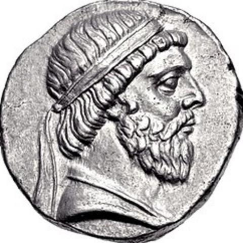
مهرداد یکم۱۷۱ تا ۱۳۲ ق.مماد و بابل را گرفت و اشکانیان را شاهنشاهیای بزرگ کرد
مهرداد یکم اشکانیان را از پادشاهیای کوچک به شاهنشاهیای بزرگ بدل کرد؛ ماد، خوزستان و بابل را گرفت و مرز ایران را تا رود فرات رساند. از روزگار او تیسفون پایتخت شاهنشاهی شد و اشکانیان همتراز روم ایستادند. این نگاره، چهرهی او بر سکههایش است.
فرهاد دوم۱۳۲ تا ۱۲۷ ق.م
اردوان یکم۱۲۷ تا ۱۲۴ ق.م
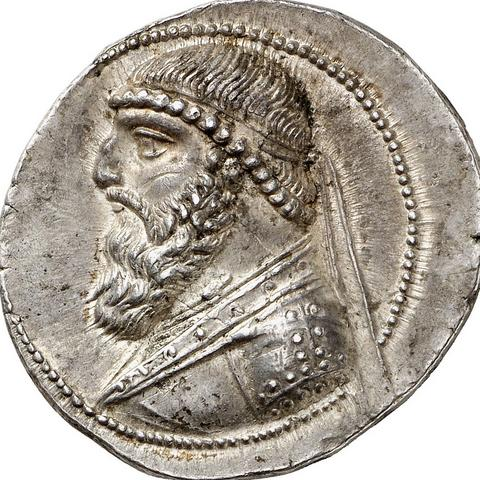
مهرداد دوم۱۲۴ تا ۹۱ ق.م«مهرداد بزرگ»؛ شاهنشاهی را به اوج رساند و با چین و روم پیوند بست
مهرداد دوم، «مهرداد بزرگ»، شاهنشاهی اشکانی را به اوج رساند؛ ارمنستان و میانرودان را در دست گرفت، راه ابریشم را گشود و با چین پیوند بست و سولا، سفیر روم، را به دیدار پذیرفت. بر سکههایش نخستین بار «شاهنشاه» خوانده شد.
گودرز یکم۹۱ تا ۸۷ ق.م
ارد یکم۸۷ تا ۸۰ ق.م
سیناتروک۷۷ تا ۷۰ ق.م
فرهاد سوم۷۰ تا ۵۷ ق.م
مهرداد سوم۵۷ تا ۵۴ ق.مهماورد ارد دوم
ارد دوم۵۷ تا ۳۸ ق.مسپاهش به فرماندهی سورنا، رومیان را در نبرد حران (۵۳ ق.م) درهم شکست
فرهاد چهارم۳۸ تا ۲ ق.م
فرهاد پنجم و ملکه موزا۲ ق.م تا ۴ م
ارد سوم۴ تا ۶ م
ونن یکم۸ تا ۱۲ م
اردوان دوم۱۲ تا ۳۸ م
وردان یکم۴۰ تا ۴۷ م
گودرز دوم۴۱ تا ۵۱ م
ونن دوم۵۱ م
بلاش یکم۵۱ تا ۷۸ م
پاکور دوم۷۸ تا ۱۱۰ م
خسرو۱۰۹ تا ۱۲۹ مهماورد اردوان سوم در خاور شاهنشاهی
اردوان سوم۱۱۰ تا ۱۴۷ م
بلاش چهارم۱۴۷ تا ۱۹۱ م
بلاش پنجم۱۹۱ تا ۲۰۸ م
بلاش ششم۲۰۸ تا ۲۲۸ م
اردوان چهارم۲۱۶ تا ۲۲۴ مواپسین شاه بزرگ اشکانی؛ اردشیر بابکان در نبرد هرمزدگان (۲۲۴ م) او را شکست داد
۲۲۴ تا ۶۵۱ میلادی · پایتخت: تیسفون
ساسانیان — واپسین شاهنشاهی پیش از اسلام
اردشیر بابکان از فارس برخاست، واپسین شاه اشکانی را شکست داد و شاهنشاهی ساسانی را بنیاد گذاشت؛ چهار سدهای که ایران یکپارچه، همتراز روم و سپس بیزانس بود و آیین زرتشتی آیین شاهنشاهی. شاهان ساسانی، از اردشیر تا یزدگرد سوم:
اردشیر بابکان۲۲۴ تا ۲۴۱ مبنیانگذار شاهنشاهی ساسانی
اردشیر بابکان از فارس برخاست، اردوان چهارم، واپسین شاه اشکانی، را در نبرد هرمزدگان شکست داد و شاهنشاهی ساسانی را بنیاد گذاشت. او ایران را دوباره یکپارچه و نیرومند کرد، شهرهای تازهای چون گور (فیروزآباد) ساخت و آیین زرتشتی را آیین شاهنشاهی کرد. این نگاره، چهرهی او بر سکههایش است.
شاپور یکم۲۴۱ تا ۲۷۲ موالریانوس، امپراتور روم، را گرفتار کرد؛ نقشهای پیروزیاش در نقش رستم و بیشاپور است
هرمزد یکم۲۷۲ تا ۲۷۳ م
بهرام یکم۲۷۳ تا ۲۷۶ م
بهرام دوم۲۷۶ تا ۲۹۳ م
بهرام سوم۲۹۳ م
نرسی۲۹۳ تا ۳۰۲ م
هرمزد دوم۳۰۲ تا ۳۰۹ م
آذرنرسی۳۰۹ م
شاپور دوم۳۰۹ تا ۳۷۹ مهفتاد سال پادشاهی کرد؛ درازترین فرمانروایی ایران باستان
شاپور دوم از زایش شاه بود و هفتاد سال فرمان راند. او تازیان را از مرزهای جنوبی راند، ارمنستان را بازپس گرفت و در نبردهای بزرگ روم را شکست داد؛ ژولیان، امپراتور روم، در لشکرکشی به ایران جان باخت. این نگاره، چهرهی او بر سکههایش است.
اردشیر دوم۳۷۹ تا ۳۸۳ م
شاپور سوم۳۸۳ تا ۳۸۸ م
بهرام چهارم۳۸۸ تا ۳۹۹ م
یزدگرد یکم۳۹۹ تا ۴۲۰ م
بهرام پنجم۴۲۰ تا ۴۳۸ مهمان بهرام گورِ شاهنامه
یزدگرد دوم۴۳۸ تا ۴۵۷ م
هرمزد سوم۴۵۷ تا ۴۵۹ م
پیروز یکم۴۵۹ تا ۴۸۴ م
بلاش۴۸۴ تا ۴۸۸ م
قباد یکم۴۸۸ تا ۵۳۱ مبا میانپردهی برادرش جاماسب: ۴۹۶ تا ۴۹۸ م
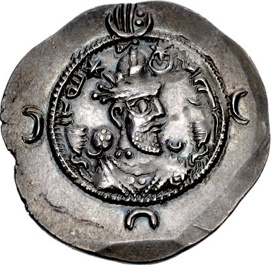
خسرو یکم۵۳۱ تا ۵۷۹ مخسرو انوشیروانِ دادگر؛ سازندهی ایوان کسری در تیسفون
خسرو یکم، انوشیروانِ دادگر، نامآورترین شاه ساسانی است؛ مالیات و سپاه را سامان داد، دهقانان را نیرو بخشید و در برابر بیداد ایستاد. ایوان کسری در تیسفون از یادگارهای اوست و در روزگارش دانش و پزشکی، چون دانشگاه گندیشاپور، شکوفا شد. این نگاره، چهرهی او بر سکههایش است.
هرمزد چهارم۵۷۹ تا ۵۹۰ م
خسرو دوم۵۹۰ تا ۶۲۸ مخسروپرویز؛ با میانپردهی بهرام چوبین: ۵۹۰ تا ۵۹۱ م
قباد دوم۶۲۸ مشیرویه، پسر خسروپرویز
اردشیر سوم۶۲۸ تا ۶۳۰ م
شهربراز۶۳۰ م
پوراندخت۶۳۰ تا ۶۳۱ مدختر خسروپرویز؛ از نخستین زنان بر تخت شاهنشاهی ایران
آزرمیدخت۶۳۱ تا ۶۳۲ مخواهر پوراندخت
یزدگرد سوم۶۳۲ تا ۶۵۱ مواپسین شاه ساسانی؛ با مرگ او در مرو، شاهنشاهی ساسانی پایان یافت
با مرگ یزدگرد سوم در مرو، در سال ۶۵۱ میلادی، شاهنشاهی ساسانی پایان یافت و روزگار ایران پیش از اسلام بسته شد؛ اما نام این شاهان در شاهنامه، در سنگنبشتهها و بر سکههایشان تا امروز زنده است.
سرگذشت پهلوانی ایران
شاهنامه — سرگذشت پهلوانان ایران
شاهنامه سرودهی حکیم ابوالقاسم فردوسیِ توسی است؛ نزدیک پنجاه هزار بیت که فردوسی سرودنش سی سال به درازا کشید و نزدیک به هزار سال پیش به پایان رساند. از کیومرث، نخستین شاه، تا پایان روزگار ساسانیان، سرگذشت شاهان و پهلوانان ایران را زنده نگه داشته — و این بخش، خانهی همان سرگذشتهاست. هر سرگذشت، نگارهی ویژهی خودش را دارد؛ نگارهای برگرفته از همان سرگذشت.
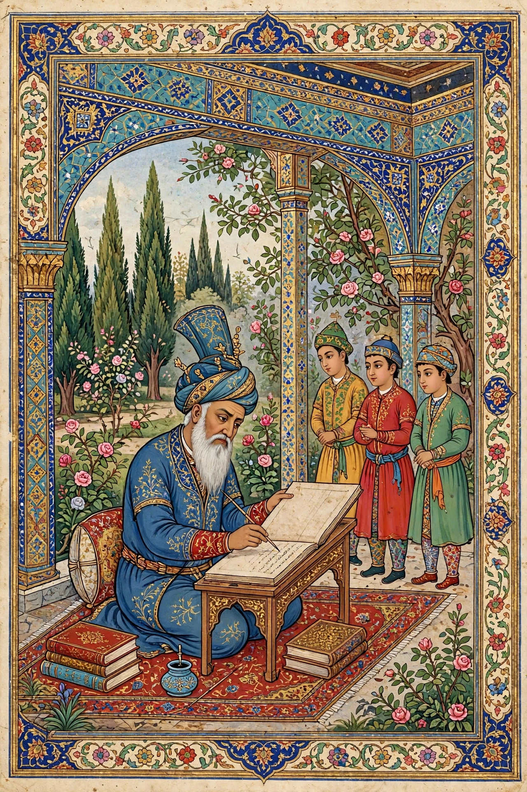
نگارهی زنده · در حرکتفردوسی در کار سرودن شاهنامه — حکیم توس سی سال از زندگیاش را پای این کتاب گذاشت تا سرگذشتهای ایران زنده بمانند.
نگارهها دیگه عکسِ ثابت نیستن — زنده و در حرکتندوربین آروم روی نگاره میگرده و نزدیک میشه، نور روی صحنه میلغزه و اونجا که آتش هست، شعله سوسو میزنه و جرقه بالا میره؛ درست مثل یه مینیاتورِ زنده. اگه چشمت خسته شد، با دکمهی روبهرو حرکت رو نگه دار.
سرگذشت یکم · از آغاز شاهنامه، بهترتیب
آغاز شاهنامه و کیومرث، نخستین شاه
با صدای خودم بشنواین بخش را با صدای خودم خواندهام؛ دکمهی پخش را بزن و با صدای من گوش بده.0:00 / 2:12
۲:۱۲
نگارهی زنده · در حرکتکیومرث بر تخت کوهستان — او و یارانش با پوشش پلنگینه، همانگونه که شاهنامه میگوید.
به نام خداوند جان و خرد، کزین برتر اندیشه برنگذرد خداوند نام و خداوند جای، خداوند روزیدهِ رهنمای
آغاز شاهنامه، سرودهی فردوسی
فردوسی شاهنامه را نه با نام شاهی، که با نام خداوندِ جان و خرد آغاز میکند؛ یعنی پیش از هر سرگذشت و هر پهلوانی، این خرد است که راه را نشان میدهد. پس از ستایش خداوند و سخن از آفرینش جهان، نخستین سرگذشت شاهنامه میرسد به کیومرث؛ نخستین شاهی که بر جهان فرمان راند.
کیومرث شد بر جهان کدخدای، نخستین به کوه اندرون ساخت جای سرِ تخت و بختش برآمد ز کوه، پلنگینه پوشید خود با گروه
از سرگذشت کیومرث در شاهنامه
به زبان ساده: کیومرث در کوهستان جای گرفت و او و یارانش پوست پلنگ پوشیدند. خوردوخوراک و پوشاک و آیینِ زندگیِ مردمان از روزگار او آغاز شد و سی سال پادشاهی کرد. پسری داشت به نام سیامک که اهریمن بر او رشک برد و پسرش، دیوی سیاه، سیامک را کشت. کیومرث یک سال در سوگ پسر نشست، تا آنکه سروش، فرشتهی پیامآور، به او گفت سوگ را بس کند و با دیو بستیزد. هوشنگ، پسر سیامک، سپاهی از پریان و جانوران گرد آورد، دیو را کشت و کین پدر را گرفت. کیومرث پس از آن درگذشت و تخت به هوشنگ رسید.
چرا شاهنامه با این سرگذشت آغاز میشود؟ چون همهچیز از همینجا آغاز میشود: نخستین شاه، نخستین سوگ و نخستین دادخواهی. شاهنامه از همان سرگذشت نخست میگوید که جهان آوردگاه راستی و دروغ است و آدمی باید سوی راستی بایستد.
سرگذشت دوم · بهترتیب شاهنامه
هوشنگ و پیدایش آتش — جشن سده
با صدای خودم بشنواین بخش را با صدای خودم خواندهام؛ دکمهی پخش را بزن و با صدای من گوش بده.0:00 / 1:55
۱:۵۵
نگارهی زنده · در حرکتهوشنگ و نخستین آتش — جرقهی سنگها، مار گریزان و آتش سده.
پس از کیومرث، تخت به نوهاش هوشنگ رسید؛ همان جوانی که کین پدرش سیامک را از دیو گرفته بود. هوشنگ شاهی خردمند و جهانجوی بود و چهل سال پادشاهی کرد. شاهنامه او را یابندهی آتش میداند؛ و سرگذشتش از روزی آغاز میشود که شاه با چند تن از یارانش به سوی کوه میرفت:
یکی روز شاه جهان سوی کوه، گذر کرد با چند کس همگروه پدید آمد از دور چیزی دراز، سیهرنگ و تیرهتن و تیزتاز
از سرگذشت هوشنگ در شاهنامه
به زبان ساده: از دور ماری سیاه و تیزرو پدیدار شد که از دهانش دود برمیخاست. هوشنگ سنگی برداشت و به سوی مار پرتاب کرد. مار گریخت، اما سنگ هوشنگ به سنگی دیگر خورد و جرقهای جهید:
برآمد به سنگ گران سنگ خرد، همان و همین سنگ بشکست گرد فروغی پدید آمد از هر دو سنگ، دل سنگ گشت از فروغ آذرنگ
از سرگذشت هوشنگ در شاهنامه
هوشنگ دانست که این فروغ، پیشکشی ایزدی است. همان شب آتشی بزرگ چون کوه برافروخت، گرد آن با یارانش جشن گرفت و آن جشن فرخنده را «سده» نام نهاد؛ جشنی که هنوز هم دهم بهمن، پنجاه روز پیش از نوروز، با افروختن آتش برگزار میشود. در روزگار هوشنگ، آهن از سنگ جدا شد، آهنگری و کشاورزی گسترش یافت و مردم کشت و آبیاری و رام کردن جانوران را آموختند؛ برای همین است که سرگذشت او، سرگذشت آغاز آبادانی و نخستین جشن آتش ایران است.
تازهسرگذشت سوم · بهترتیب شاهنامه
طهمورثِ دیوبند و آموختنِ نبشتن
با صدای خودم بشنواین بخش را با صدای خودم خواندهام؛ دکمهی پخش را بزن و با صدای من گوش بده.0:00 / 0:58
۰:۵۸
نگارهی زنده · در حرکتطهمورث و دیوانِ در بند — دیوی بر لوحی مینویسد و هنر نبشتن را به شاه میآموزد.
پس از هوشنگ، پسرش طهمورث بر تخت نشست و سی سال پادشاهی کرد؛ شاهنامه او را «دیوبند» میخواند. با راهنمایی دستور خردمندش، شهرسپ، راه پاکی و داد پیش گرفت و رام کردن جانوران سودمند — یوز و باز و شاهین — و رشتن پشم و بافتن جامه از کارهای روزگار اوست:
پسر بد مر او را یکی هوشمند، گرانمایه طهمورث دیوبند
از سرگذشت طهمورث در شاهنامه
طهمورث اهریمن را به افسون بست و بر او زین نهاد و سوارش گرد جهان میتاخت. دیوان شوریدند و به جنگ آمدند؛ شاه دو بهره از آنان را به افسون بست و با گرز گران پراکندهشان کرد. دیوانِ در بند، زینهار خواستند و گفتند اگر رهایشان کند، هنری نو به او میآموزند که تا آن روز نمیشناخت:
نبشتن به خسرو بیاموختند، دلش را به دانش برافروختند نبشتن یکی نه، که نزدیک سی، چه رومی، چه تازی و چه پارسی
از سرگذشت طهمورث در شاهنامه
به زبان ساده: آن هنر، «نبشتن» بود — نوشتن و خواندن. دیوان نزدیک سی گونه خط و زبان به شاه آموختند؛ از رومی و تازی و پارسی تا سغدی و چینی و پهلوی. پس سرگذشت طهمورث، در کنار نبرد با دیوان، سرگذشت رسیدن دانشِ نوشتن به آدمیان است؛ و نام «دیوبند» برای همیشه بر او ماند.
سرگذشت چهارم · بهترتیب شاهنامه
جمشید و بنیاد نوروز
با صدای خودم بشنواین بخش را با صدای خودم خواندهام؛ دکمهی پخش را بزن و با صدای من گوش بده.0:00 / 1:43
۱:۴۳
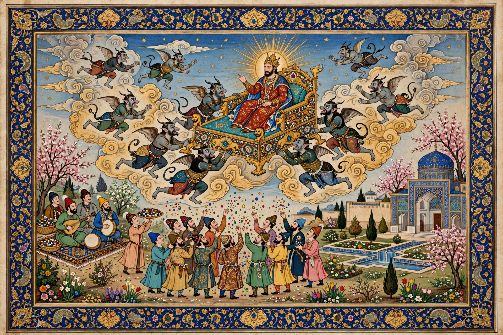
نگارهی زنده · در حرکتجمشید بر تخت پروازکننده — چون خورشیدی تابان میان هوا، و مردمان بر او گوهر میافشانند.
پس از طهمورث، پسرش جمشید بر تخت نشست و هفتصد سال پادشاهی کرد؛ روزگاری که در آن نه مرگ بود و نه بیماری و نه رنج. در روزگار او هنرها یکییکی پدیدار شد: ساختن ابزار جنگ، رشتن و بافتن جامههای گوناگون، ساختن کشتی و رهنوردی بر آبها و بخش کردن مردمان به پیشهها.
چو خورشید تابان میان هوا، نشسته بر او شاه فرمانروا
از سرگذشت جمشید در شاهنامه
به زبان ساده: جمشید تختی گوهرنشان ساخت که هرگاه میخواست، دیوان آن را برمیداشتند و از زمین به آسمان میبردند؛ شاه بر آن تخت، چون خورشیدی تابان میان هوا مینشست و جهانیان شگفتزده گرد او انجمن میشدند. آن روز، روز هرمز از ماه فروردین بود؛ سرِ سال نو:
به جمشید بر گوهر افشاندند، مر آن روز را روز نو خواندند سر سال نو هرمز فرودین، بر آسوده از رنج روی زمین
از سرگذشت جمشید در شاهنامه
بزرگان به شادی آراستند و می و جام و رامشگران خواستند؛ و چنین جشن فرخی از آن روزگار تا امروز برای ما یادگار مانده است: نوروز. اما سرگذشت جمشید پایان خوشی ندارد؛ پس از سیصد سال آبادانی، غرور در دل شاه نشست، خود را آفریدگار جهان خواند و فرّهی ایزدی از او برگشت — و راه برای آمدن ضحاک باز شد، که سرگذشتش سرگذشت بعدی ماست.
تازهسرگذشت پنجم · بهترتیب شاهنامه
ضحاک و کاوهی آهنگر — درفش کاویانی
با صدای خودم بشنواین بخش را با صدای خودم خواندهام؛ دکمهی پخش را بزن و با صدای من گوش بده.0:00 / 4:15
۴:۱۵
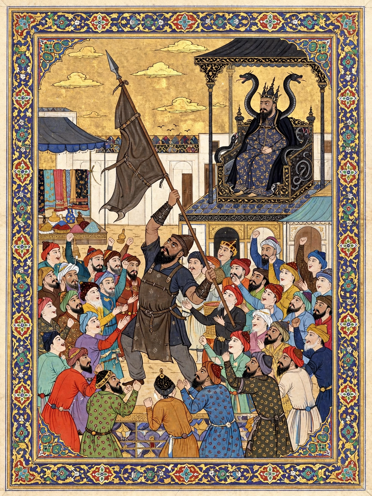
نگارهی زنده · در حرکتکاوه پیشبند چرمیاش را بر سر نیزه برافراشت — و آن پیشبند، درفش کاویانی شد؛ و ضحاکِ ماردوش بر تخت.
پس از آنکه فرّهی ایزدی از جمشید برگشت، نوبت ضحاک رسید؛ شاهزادهای از سرزمین تازیان، پسر مرداس. اهریمن نخست در پیکر مردی نیکخواه نزد او آمد و او را فریفت تا پدرش را کشت و بر تخت نشست؛ سپس در پیکر آشپزی چیرهدست به کاخ او راه یافت و خورشهایی از گوشت جانوران برایش ساخت که تا آن روز کسی نخورده بود. ضحاک خشنود شد و گفت هر آرزویی داری بگو. آشپز گفت: تنها میخواهم بر دو شانهات بوسه زنم. بوسه زد و ناپدید شد — و از جای بوسهها دو مار سیاه رویید:
ببوسید و شد بر زمین ناپدید، کس اندر جهان این شگفتی ندید دو مار سیه از دو کتفش برست، غمی گشت و از هر سویی چاره جست
از سرگذشت ضحاک در شاهنامه
به زبان ساده: مارها را هرچه بریدند، باز روییدند. سرانجام اهریمن، این بار در پیکر پزشکی، آمد و گفت چارهی مارها این است که هر روز مغز سر دو جوان به آنها خورانده شود تا آرام بگیرند. از آن پس هر روز دو جوان ایرانی را میکشتند و مغزشان را خوراک مارها میکردند. ضحاک هزار سال بر ایران فرمان راند؛ روزگاری که شاهنامه چنین وصفش میکند:
چو ضحاک شد بر جهان شهریار، بر او سالیان انجمن شد هزار نهان گشت کردار فرزانگان، پراکنده شد کام دیوانگان هنر خوار شد جادویی ارجمند، نهان راستی آشکارا گزند
از سرگذشت ضحاک در شاهنامه
در این میان، مردی آهنگر بود به نام کاوه. هفده پسرش را یکییکی برای خوراک مارها برده بودند و تنها یک پسر برایش مانده بود. کاوه به درگاه ضحاک آمد و فریاد دادخواهی برآورد: اگر شاه دادگر است، بگوید گناه پسران من چه بود؟ ضحاک از خشم مردم ترسید و فرمان داد پسرش را بازگردانند و از کاوه خواست نوشتهای را امضا کند که در آن گواهی داده بود ضحاک شاهی دادگر است. کاوه آن نوشته را پیش چشم همه پاره کرد و از درگاه بیرون آمد:
چو کاوه برون شد ز درگاه شاه، بر او انجمن گشت بازارگاه همی بر خروشید و فریاد خواند، جهان را سراسر سوی داد خواند
از سرگذشت ضحاک در شاهنامه
کاوه پیشبند چرمی آهنگریاش را — همان که هنگام کار بر تن میکرد — بر سر نیزهای نهاد و مردم را به دادخواهی خواند. آن پیشبند چرمی «درفش کاویانی» شد؛ درفش شاهنشاهی ایران که تا پایان روزگار ساسانی، آراسته به گوهرها، پیشاپیش سپاه ایران برافراشته میشد. مردم گرد کاوه و گرد فریدون انجمن شدند؛ فریدون جوانی از نژاد جمشید بود که در البرز پنهان بزرگ شده بود. فریدون با گرز گاوسر بر ضحاک تاخت و او را شکست داد؛ اما سروش پیام آورد که هنوز هنگام مرگ ضحاک نرسیده است. پس او را به غاری در کوه دماوند بردند و با میخهای گران بر سنگ بستند تا پایان جهان همانجا بماند. هزار سال ستم پایان یافت و فریدون بر تخت نشست — و سرگذشت بخش کردن جهان میان سه پسرش، سرگذشت بعدی ماست.
تازهسرگذشت ششم · بهترتیب شاهنامه
فریدون و سه پسرش — بخش کردن جهان
با صدای خودم بشنواین بخش را با صدای خودم خواندهام؛ دکمهی پخش را بزن و با صدای من گوش بده.0:00 / 2:56
۲:۵۶
نگارهی زنده · در حرکتفریدون جهان را میان سه پسرش بخش میکند — و سهم ایرج، کوچکترین پسر، ایران است.
فریدون از نژاد جمشید بود. پدرش آبتین را ضحاک کشته بود و مادرش فرانک، از بیم مأموران ضحاک، نوزاد را به البرز برد و او را به گاوی نامآور به نام «برمایه» سپرد که سه سال شیرش داد. چون فریدون شانزدهساله شد، از مادر سرگذشت خاندانش را پرسید و دانست که کیست و چه کینی بر گردن دارد. همان جوان بود که در سرگذشت پیش، با کاوهی آهنگر برخاست و ضحاک را در دماوند به بند کشید. شاهنامه دربارهی او میگوید:
فریدون فرخ فرشته نبود، ز مشک و ز عنبر سرشته نبود به داد و دهش یافت آن نیکویی، تو داد و دهش کن فریدون تویی
از سرگذشت فریدون در شاهنامه
به زبان ساده: فریدون نه فرشته بود و نه از مشک و عنبر ساخته شده بود؛ آدمی بود مانند همه، و اگر به آن بزرگی رسید، از دادگری و بخشندگیاش بود — و هر کس داد و دهش پیشه کند، فریدونِ روزگار خویش است. فریدون پانصد سال پادشاهی کرد. سه پسر داشت: سلم، تور و ایرج. چون پسران بزرگ شدند، شاه جهانِ آبادِ آن روزگار را میان آنان بخش کرد: روم و سرزمینهای باختر را به سلم، پسر بزرگتر، داد؛ توران و چین را به تور، پسر میانی؛ و ایران و سرزمینهای میانی را — بهترین بخش جهان را — به ایرج، کوچکترین و دوستداشتنیترین پسرش، سپرد.
اما این بخش کردن، به جای برادری، تخم کین کاشت. سلم و تور بر ایرج رشک بردند که چرا بهترین سرزمین از آنِ اوست و نامهای خشمآلود برای پدر فرستادند. ایرج، که دلی پاک داشت، بیسلاح و بیسپاه نزد برادران رفت تا با مهربانی دلشان را نرم کند؛ اما تور در خشم با خنجر بر او تاخت و او را کشت و سرش را در صندوقی نزد پدر فرستاد. فریدونِ پیر سر بریدهی پسر نازنینش را در آغوش گرفت و از اندوه، چشمانش از گریه نابینا شد. او چشم به راه نوهاش منوچهر ماند تا کین ایرج را از سلم و تور بستاند — و آن، سرگذشت بعدی ماست.
سرگذشت هفتم · بهترتیب شاهنامه
منوچهر و کینخواهی ایرج
با صدای خودم بشنواین بخش را با صدای خودم میخوانم و ضبطش را همینجا میگذارم تا با صدای من گوش بدهی.
بهزودی
نگارهی زنده · در حرکتمنوچهر بر تخت — شاه جوانی که کین پدربزرگش ایرج را از سلم و تور ستاند و صد و بیست سال به داد پادشاهی کرد.
پس از فریدون، تخت به نوهاش منوچهر رسید؛ پسری از دختر ایرج که فریدون او را با دلی پر امید پرورده بود تا روزی کین پدر را بستاند. منوچهر جوانی دلیر و دادگر بود. نخست بر سر مزار فریدون سوگ گرفت و آنگاه کمر به کینخواهی ایرج بست: سپاهی بزرگ آراست، قارنِ پهلوان را سپهبد سپاه کرد و خود به سوی توران و سرزمین سلم به راه افتاد:
چو منوچهر آمد به تخت کیان، ببست از پی کین ایرج میان
از سرگذشت منوچهر در شاهنامه
به زبان ساده: نخست تور به نبرد آمد. منوچهر در کمین نشست و شبی بر سپاه تور شبیخون زد؛ تور گریخت و منوچهر خود به دنبالش تاخت، او را گرفت و سرش را برید. سلم چون این خبر را شنید، به سوی دژ الانان گریخت؛ قارن او را دنبال کرد و سرانجام منوچهر خود سلم را نیز کشت و سر هر دو برادر را با پیروزی به ایران آورد. کین ایرج گرفته شد و ایران از آن پس آسوده شد.
منوچهر صد و بیست سال پادشاهی کرد و روزگارش روزگار داد و آبادانی بود: جویها کنده شد، شهرها ساخته شد و مرزهای ایران از دشمنان پاس داشته شد. چون پیر شد و پایان کارش را نزدیک دید، پسرش نوذر و بزرگان را خواند، آنان را به دادگری سفارش کرد و تخت را به نوذر سپرد. چنین بود پایان روزگار شاهی که با کینخواهی، دفتر کینهی برادران را بست؛ اما در همان روزگار، در خانهی سام، سرگذشتی بزرگ دیگر آغاز شده بود.
در همین دوره، سامِ نریمان، پهلوان بزرگ ایران و سپهبد منوچهر، پسری یافت؛ اما کودک با مویی سپید چون برف زاده شد. سام، از بیم سرزنش مردمان، فرمان داد نوزاد را به کوهستان البرز ببرند و همانجا رها کنند. اما سیمرغ، مرغ شگفت ایران، کودک را یافت، او را به آشیانهاش برد و با مهر، در کنار جوجههای خودش پرورد. آن کودک سپیدموی، زال بود — و سرگذشت او، سرگذشت بعدی ماست.
سرگذشت هشتم · بهترتیب شاهنامه
زال و رودابه
با صدای خودم بشنواین بخش را با صدای خودم میخوانم و ضبطش را همینجا میگذارم تا با صدای من گوش بدهی.
بهزودی
نگارهی زنده · در حرکتزال و رودابه — رودابه گیسوی بلندش را از بام فرو میهشد تا زال از آن بالا بیاید.
زال، پسر سام، که سیمرغ او را در البرز پرورده بود، جوانی سپیدموی و دلیر و خردمند شد و پدرش زابلستان را به او سپرد. روزی زال برای شکار و گردش به سوی کابل رفت. مهراب، شاه کابل، از نژاد ضحاک بود و باجگزار سام. مهراب به پیشواز زال آمد و او را به مهمانی خواند. در آن مهمانی، زال از زبان خود مهراب وصف دخترش رودابه را شنید؛ دختری که مهراب او را چون جان دوست میداشت:
پس پردهی او یکی دختر است، که رویش ز خورشید روشنتر است
از سرگذشت زال و رودابه در شاهنامه
به زبان ساده: همین وصف کافی بود تا دل زال بلرزد. رودابه نیز چون آوازهی زال — سپیدمویی و دلیری و خردش — را شنید، دل به او باخت. پنج کنیزک رودابه به بهانهی گل چیدن نزد زال رفتند و پیام مهر او را رساندند. شبی زال به پای دیوار کاخ کابل آمد و رودابه از بام، گیسوی بلند و مشکینش را چون کمندی فرو هشته و گفت: از گیسویم بالا بیا. زال گفت دلم نمیآید گیسوی تو را آزرده کنم؛ کمند خویش را به کنگرهی بام انداخت و بالا رفت. آن دو تا سپیدهدم سخن گفتند و پیمان بستند:
دو دلداده پیمان ببستند چنان، که جز هم نخواهند کس در جهان
از سرگذشت زال و رودابه در شاهنامه
اما راه آسان نبود: رودابه از نژاد ضحاک بود و سام و منوچهر از این پیوند خشمگین شدند؛ منوچهر بیم داشت از پیوند این دو، فرزندی پدید آید که ایران را به آشوب کشد. سام نخست سخت مخالفت کرد؛ اما چون دل پسرش را دید و از ستارهشناسان شنید که از این پیوند پهلوانی بیهمتا — رستم — زاده خواهد شد، نرم شد و نامهای به منوچهر نوشت. از سوی دیگر، سیندخت، مادر خردمند رودابه، با گنج و گوهر بسیار نزد سام به زابلستان رفت و با سخن نرم و خردمندانه، دل پهلوان پیر را به دست آورد و سام پذیرفت که برای این پیوند نزد شاه پادرمیانی کند.
منوچهر چون نامهی سام را خواند و پاسخ ستارهشناسان را شنید که فرزند این دو، نگاهبان ایران خواهد بود، خشنود شد و رضا داد. جشن پیوند زال و رودابه با شکوه در کابل و زابل برگزار شد و دو دلداده به هم رسیدند — و از این پیوند، چندی بعد، رستم دستان زاده شد؛ پهلوانی که سرگذشتهای آیندهی شاهنامه بر شانههای او میگردد.
تازهسرگذشت نهم · بهترتیب شاهنامه
زادن رستم
با صدای خودم بشنواین بخش را با صدای خودم میخوانم و ضبطش را همینجا میگذارم تا با صدای من گوش بدهی.
بهزودی
نگارهی زنده · در حرکتزادن رستم — نوزاد پهلوان در آغوش پدر و مادر، و سیمرغ بر فراز کاخ زابل.
زال و رودابه پس از آن پیوند فرخنده، روزگاری خوش داشتند تا آنکه رودابه باردار شد و همه چشم به راه کودکی بودند که ستارهشناسان نویدش را داده بودند: پهلوانی که نگاهبان ایران خواهد بود. اما کودک در شکم مادر چنان بزرگ بود که رودابه از درد، تاب و توان از کف داد و رنگ از رخسارش پرید؛ موبدان و پزشکان درمانده شدند و زال، دلشکسته و آشفته، نمیدانست چه کند. در آن تنگی، به یاد پر سیمرغ افتاد و آن را بر آتش نهاد. سیمرغ، مرغ دانای البرز، به یاری آمد و راه رهایی را به زال آموخت:
نخستین به می ماه را مست کن، ز دل بیم و اندیشه را پست کن
از سرگذشت زادن رستم در شاهنامه
به زبان ساده: سیمرغ گفت نخست به رودابه می بده تا مست شود و درد را حس نکند و بیم و اندیشه از دلش برود؛ آنگاه مردی بینادل و پرفسون — پزشکی دانا و کارآزموده — بیاور تا کار زادن این کودک بزرگ را به شیوهای شگفت انجام دهد:
بیاور یکی خنجر آبگون، یکی مرد بینادل و پرفسون
از سرگذشت زادن رستم در شاهنامه
چنان کردند که سیمرغ گفته بود: پهلوی رودابه را با خنجر شکافتند و کودکی بیرون آوردند چنان بزرگ و درشتاندام که همه از دیدنش به شگفت آمدند؛ نوزادی یکروزه که چون کودکی یکساله مینمود، با چهرهای زیبا و مویی سرخ. زخم رودابه، با مالیدن پر سیمرغ، بهبود یافت و او تندرست برخاست. کودک را «رستم» نامیدند؛ نامی که مادرش، چون او را دید و از رنج زادن رست، بر او نهاد: «رستم» یعنی رها شدم. ده دایه او را شیر میدادند و چون از شیر گرفته شد، خوراکش چندان بود که پنج مرد را بس بود.
خبر زادن رستم به سام رسید؛ پهلوان پیر به زابلستان آمد و چون نوه را دید — کودکی که در گهواره چون شیری خفته بود — شاد شد، او را در آغوش گرفت و برایش آیندهای بزرگ آرزو کرد. رستم در دامن زال و رودابه و در سایهی مهر سام بالید: سواری و تیر و کمان و گرز آموخت و هنوز نوجوان بود که فیل سپید شاه را — که گریخته بود و مردم را میآزرد — با یک ضربهی گرز از پا درآورد و همه دانستند پهلوانی که ستارهشناسان گفته بودند، آمده است. از این پس، سرگذشت شاهنامه بیش از همه سرگذشت اوست: رستم، تهمتن، پهلوان پهلوانان ایران.
تازهسرگذشت دهم · بهترتیب شاهنامه
هفتخان رستم
با صدای خودم بشنواین بخش را با صدای خودم میخوانم و ضبطش را همینجا میگذارم تا با صدای من گوش بدهی.
بهزودی
نگارهی زنده · در حرکتهفتخان رستم — خان هفتم: نبرد رستم با دیو سپید در غار تاریک مازندران.
پس از زادن رستم و بالیدنش، نوبت آزمونی بزرگ رسید. کیکاوس، شاه ایران، فریب دیوی را خورد که به ریخت آوازخوانی نزد او آمده و از باغهای پرگل مازندران — سرزمین دیوان و جادو — برایش خوانده بود؛ شاه با سپاهی بزرگ به مازندران تاخت تا آن را بگشاید، اما دیوان بر سپاه ایران تاختند و کیکاوس و پهلوانانش به جادوی دیو سپید نابینا شدند و همه در بند افتادند. فرستادهای خود را به زال رساند و زال، رستم جوان را خواند و گفت: تنها تو میتوانی شاه و سپاه ایران را رها کنی. رستم راه کوتاه و پرخطر کوهستان را برگزید — راهی که هفت خان، هفت ایستگاه پر از دیو و اژدها و جادو، در آن بود — و تنها با اسبش رخش به راه افتاد:
تهمتن سوی مازندران شد روان، به فرمان کاوس، شاه جهان
از سرگذشت هفتخان رستم در شاهنامه
به زبان ساده: در خان یکم، شیری درنده شبانگاه بر رخش تاخت و رخش او را کشت؛ رستم نخست خشم گرفت که چرا بیدارم نکردی، اما دانست رخش جانش را نگه داشته است. در خان دوم، از بیابانی سوزان و بیآب گذشت و گوسفندی شگفت راه چشمه را به او نشان داد و از تشنگی رست. در خان سوم، اژدهایی مهیب چند بار بر او تاخت و رستم سرانجام با یاری رخش سر آن اژدها را برید. در خان چهارم، زن جادو را که به ریخت زیبارویی بر او پدیدار شده بود شناخت و او را از میان برداشت.
در خان پنجم، رستم در تاریکی با نگهبانان دشت مازندران درگیر شد و «اولاد»، پهلوان مازندرانی، را گرفت و از او پیمان گرفت که جای دیو سپید را نشانش دهد. در خان ششم، ارژنگ دیو، سالار دیوان، را کشت و سپاه دیوان را پراکنده کرد. و در خان هفتم، به غار تاریک و هولناک دیو سپید رسید؛ دیوی کوهپیکر که سنگی چون سنگ آسیا بر سر رستم انداخت. نبردی سخت درگرفت و سرانجام رستم دیو سپید را بر زمین زد، سرش را برید و جگرش را بیرون آورد؛ چه گفته بودند خون و جگر دیو سپید داروی چشمهای نابینای کاوس و پهلوانان است.
رستم جگر دیو سپید را نزد کاوس برد و از خون آن در چشمهای شاه و پهلوانان چکاندند و همه بینایی خود را بازیافتند. کیکاوس و سپاه ایران آزاد شدند و پس از نبردی دیگر، مازندران گشوده شد و شاه با سپاس فراوان، رستم را نواخت و گرامی داشت. چنین بود هفتخان: هفت آزمون که رستم جوان را به پهلوانی بیهمتا بدل کرد؛ پهلوانی که از آن پس، هرگاه ایران در تنگنا میافتاد، چشم همه به او بود.
سرگذشتها به ترتیب شاهنامه
کیومرث، نخستین شاهمنتشر شد
هوشنگ و پیدایش آتش — جشن سدهمنتشر شد
طهمورثِ دیوبندمنتشر شد
جمشید و بنیاد نوروزمنتشر شد
ضحاک و کاوهی آهنگرمنتشر شد
فریدون و سه پسرشمنتشر شد
منوچهر و کینخواهی ایرجمنتشر شد
زال و رودابهمنتشر شد
زادن رستمتازهمنتشر شد
هفتخان رستمتازهمنتشر شد
رستم و سهرابدر راه
سیاوش و گذر از آتشدر راه
کیخسرو و نبرد با افراسیابدر راه
رستم و اسفندیاردر راه
سرگذشتها از آغاز شاهنامه و به همین ترتیب، یکییکی بیکموکاست منتشر میشن؛ هرکدام با شعرهای خود شاهنامه و شرحی به فارسی روان.
سرگذشت یکم تا دهم منتشر شد؛ سرگذشت بعدی: رستم و سهراب.
یادگار زرتشت
اوستا — سرودهای کهن ایران
اوستا کتاب ورجاوند زرتشتیان است، به زبان اوستایی، و از پنج بخش بنیادی ساخته شده: یسنا، یشتها، ویسپرد، وندیداد و خردهاوستا. کهنترین لایهاش «گاتها»ست؛ سرودهایی که خودِ زرتشت، پیامبر ایرانی، سروده. این بخش برای آشنایی با جهان اوستاست: سرودها، ایزدان و اندیشههایی که هنوز در فرهنگ ایران زندهان. هر بخش نیز نگارهی ویژهی خودش را دارد؛ نگارهای برگرفته از همان بخش.
اندیشه نیک، گفتار نیک، کردار نیک
سه پایهی آیین زرتشت — هومَت، هوخت، هورِشت
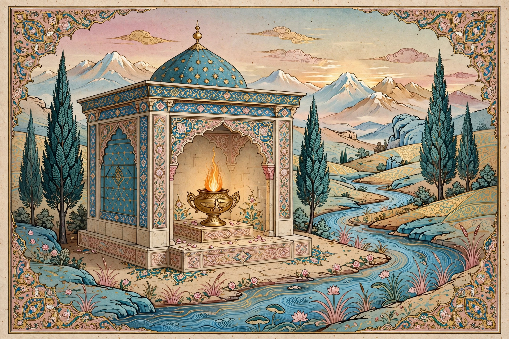
نگارهی زنده · در حرکتآتشکده و آتش ورجاوند، کنار آبهای روان و سروها — با حالوهوای جهان اوستا.
نگارهها دیگه عکسِ ثابت نیستن — زنده و در حرکتنآتشِ آتشکده سوسو میزنه، نورِ سپیدهدم روی نیایش زرتشت میلغزه و روی آبهای تیشتر برق میافته و موج میخوره؛ درست مثل یه مینیاتورِ زنده. اگه چشمت خسته شد، با دکمهی روبهرو حرکت رو نگه دار.
بخش یکم · از آغاز اوستا، بهترتیب
یسنا و گاتها — سرود یکم: اهنود گات
با صدای خودم بشنواین بخش را با صدای خودم خواندهام؛ دکمهی پخش را بزن و با صدای من گوش بده.0:00 / 1:47
۱:۴۷
پرترهی سنتی اشو زرتشت، از نقاشیِ آتشکدهی یزد — جامهی سپید، کمربند زرین و هالهی خورشید بر گرد سر.
اوستا با «یسنا» آغاز میشود؛ کتاب نیایشها که ۷۲ بخش (هات) دارد. در دل یسنا، کهنترین و ورجاوندترین بخش اوستا جای گرفته است: گاتها، هفده سرودی که خودِ زرتشت سروده. نخستین آنها «اهنود گات» است که با یسن ۲۸ آغاز میشود. پیش از خواندن سرود، با کهنترین نیایش اوستا آشنا شویم: «اشم وهو».
ašəm vohū vahištəm astī uštā astī, uštā ahmāi hyət ašāi vahištāi ašəm
نیایش «اشم وهو» به زبان اوستایی
یعنی: «راستی بهترین نیکی است؛ نیکبختی است، نیکبختی از آنِ کسی باد که برای بهترین راستی، راست باشد.»
در یسن ۲۸، زرتشت با دستهای برافراشته به نیایش میایستد و نخست از اهورامزدا شادیای را میخواهد که پاداش روانِ راستکار است. او میگوید با اندیشهی نیک به سوی خدا میآید و از او میخواهد راه درست زندگی را نشانش دهد؛ از رنجی مینالد که دروغپرستان بر درستکاران و بر کشتوکار مردم میآورند، و از اهورامزدا یاری میخواهد تا راستی در جهان پایدار شود.
پیام این سرود، پیام همهی گاتهاست: آدمی آزاد است و باید هشیارانه میان راستی (اشا) و دروغ یکی را برگزیند؛ و نیکی چیزی نیست که از آسمان بیاید، با اندیشه و گفتار و کردار خود ما ساخته میشود.
بخش دوم · یشتها
یشتها — سرودهای ایزدان: تیشتر، مهر و آناهیتا
با صدای خودم بشنواین بخش را با صدای خودم میخوانم و ضبطش را همینجا میگذارم تا با صدای من گوش بدهی.
بهزودی
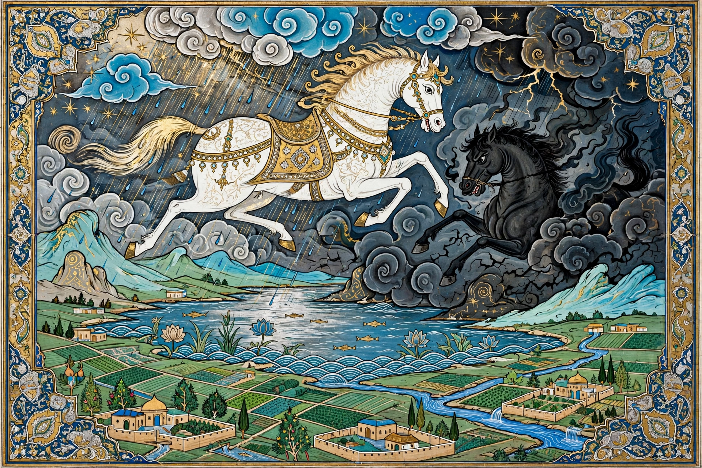
نگارهی زنده · در حرکتتیشتر، اسب سپید باران، با اپوش، اسب سیاه خشکسالی، بر فراز دریاچه و کشتزارها میجنگد.
پس از یسنا، نوبت «یشتها»ست: بیستویک سرود که هر کدام در ستایش یکی از ایزدان (یَزَتهها) سروده شدهاند؛ ایزدانی که نگهبان آب و آتش و باد و خورشید و پیمان و باراناند. زبان یشتها از گاتها تازهتر است، اما سرگذشتهایشان بسیار کهناند و بسیاری از افسانههای شاهنامه ریشه در همین سرودها دارند. سه یشت از نامآورترین آنها را با هم میخوانیم: تیشتر، مهر و آبان.
tištrīm stārəm raēvantəm xvarənaŋhvantəm yazamaide
آغاز تیشتر یشت (یشت هشتم) به زبان اوستایی
یعنی: «تیشتر، ستارهی درخشان و فرّهمند را میستاییم.»
تیشتر ایزد باران است. در تیشتر یشت، او به پیکر اسبی سپید و زیبا درمیآید و بر کرانهی دریای فراخکرت با اَپوش، دیو خشکسالی که اسبی سیاه و زشت است، میجنگد. نخست شکست میخورد، چون مردم از نیایش و ستایش او کوتاهی کردهاند؛ اما وقتی اهورامزدا خود او را میستاید و نیرو میبخشد، تیشتر پیروز میشود، دیو خشکسالی را میراند و آبها را به سوی کشتزارها و سرزمینها روان میکند. پیام سرگذشت روشن است: باران و آبادانی، پاداش مردمی است که ارزش آب و راستی را بدانند.
مهر یشت (یشت دهم) در ستایش مهر است؛ ایزد پیمان و نور و راستی، که هزار گوش و ده هزار چشم دارد و هیچ پیمانشکنی از نگاهش پنهان نمیماند. مهر پیش از برآمدن خورشید، از فراز کوه البرز بر همهی سرزمینهای ایرانی میتابد و نگهبان خانه و خانواده و آبادیهاست. نام ماه مهر و جشن مهرگان، یادگار همین ایزد بزرگ است.
آبان یشت (یشت پنجم) هم از آنِ آناهیتاست؛ ایزدبانوی آبهای روان و پاکی و باروری، که در اوستا زنی بلندبالا و زیبا و باشکوه یاد شده و آبهای جهان از چشمهی آسمانی او بر فراز البرز سرچشمه میگیرند. شاهان و پهلوانان کهن، از هوشنگ و جمشید تا زریر و گشتاسپ، کنار آبهای او نیایش میکردند و از او پیروزی میخواستند. این سه یشت با هم، چهرهی جهان کهن ایرانی را نشان میدهند: بارانی که زندگی میآورد، پیمانی که مردمان را به هم پیوسته نگه میدارد و آبی که زمین را بارور میکند.
بخش سوم · ویسپرد
ویسپرد — نیایشهای جشنها و ستایش همهی سروران آفرینش
با صدای خودم بشنواین بخش را با صدای خودم میخوانم و ضبطش را همینجا میگذارم تا با صدای من گوش بدهی.
بهزودی
نگارهی زنده · در حرکتآیین جشن گاهنبار — موبدان سپیدجامه گرد آتش ورجاوند، با پیشکشهای فصل.
پس از یشتها، نوبت «ویسپرد» است. نامش از دو واژهی اوستایی «ویسپه رَتَوو» ساخته شده، یعنی «همهی سروران»؛ سروران و نگهبانان هر بخش از آفرینش — از آفریدگان مینوی و گیتیایی تا سروران آبها و زمین و آسمان و فصلهای سال. ویسپرد کتابی جدا نیست که تنها خوانده شود؛ بیستوچهار بخش (کرده) دارد که در آیینهای بزرگ، لابهلای بخشهای یسنا جای میگیرند و همراه آن خوانده میشوند.
niwaēδayemi haŋkārayemi ratavō mainyavanąm, ratavō gaēθyanąm
آغاز ویسپرد (کردهی یکم) به زبان اوستایی
یعنی: «فرامیخوانم و نیایش را برگزار میکنم برای سروران آفریدگان مینوی و سروران آفریدگان گیتیایی.»
در همان کردهی یکم، پس از سروران آفرینش، شش جشن فصلی سال نیز یکبهیک نام برده و ستوده میشوند: جشنهای «گاهنبار» که در شش هنگام سال برگزار میشدند — میانهی بهار، میانهی تابستان، جشن گردآوری خرمن، بازگشت رمهها، میانهی زمستان و واپسین روزهای سال. این جشنها شکرگزاری برای آفرینش بود؛ هر یک یادبود یکی از آفریدههای اهورامزدا: آسمان، آب، زمین، گیاه، جانور و آدمی.
پیام ویسپرد، سپاس و پیوند است: هیچ بخشی از آفرینش — از ستاره و فصل تا آب و خاک — بینگهبان و بیارج نیست، و جشن راهی است برای آنکه آدمی سالی شش بار گرد هم آید، سپاس بگوید و سهم خود از فراوانی جهان را با دیگران بخش کند.
بخش چهارم · وندیداد
وندیداد — آیین پاکی و پاسداری از آفرینش
با صدای خودم بشنواین بخش را با صدای خودم میخوانم و ضبطش را همینجا میگذارم تا با صدای من گوش بدهی.
بهزودی
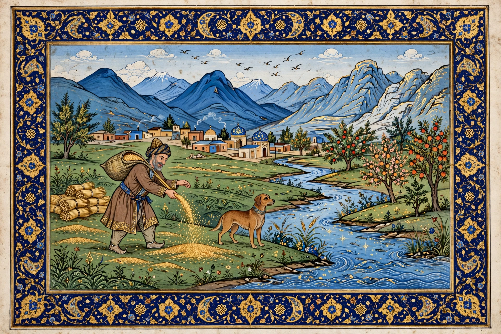
نگارهی زنده · در حرکتکاشتن غله کنار آب پاک — در وندیداد، هر که غله میکارد راستی میکارد؛ و سگ نگهبان خانه و رمه است.
پس از ویسپرد، نوبت «وندیداد» است؛ نامش از «ویدَئِو داته» میآید، یعنی «قانونِ دورکنندهی دیوان». وندیداد بیستودو بخش (فرگرد) دارد و بیشترش گفتوگوی اهورامزدا و زرتشت است: اهورامزدا میگوید و زرتشت میپرسد. فرگرد یکم، سرگذشت آفرینش شانزده سرزمین نیک است:
mraot̰ ahurō mazdā̊ spitamahe zaraθuštrahe
آغاز وندیداد (فرگرد یکم) به زبان اوستایی
یعنی: «اهورامزدا به سپیتمه زرتشت گفت.»
نخستین سرزمینی که اهورامزدا آفرید، «ایرانویج» بود، کنار رود دائیتیای نیک؛ اما اهریمن در برابر هر آفرینش نیک، آفتهای ساخت — در برابر ایرانویج، مار و سرمای سخت زمستان را. فرگرد دوم از جم (جمشید) میگوید و «وَر»ی که برای روزهای زمستان بزرگ ساخت، و فرگرد سوم از زمین: زمین آنجا شادتر است که مردی پارسا بر آن گام مینهد و کشت میکند؛ در سخن نامآور وندیداد، هر که غله میکارد، راستی (اشا) میکارد.
بخش بزرگ وندیداد آیین پاکی است: پاسداری از آب و خاک و آتش در برابر آلودگی، آیین پاککردن تن و خانه، و ارج نهادن به سگ که نگهبان خانه و رمه است و در اوستا جایگاهی بلند دارد. پیام وندیداد برای امروز هم روشن است: جهانِ آفریدهی خدا پاک است و پاک نگه داشتنِ آب و خاک و هوا، خودِ نیایش است.
بخش پنجم · خردهاوستا
خردهاوستا — نیایشهای روزانه
با صدای خودم بشنواین بخش را با صدای خودم میخوانم و ضبطش را همینجا میگذارم تا با صدای من گوش بدهی.
بهزودی
نگارهی زنده · در حرکتنیایش سپیدهدم از خردهاوستا — بهدین رو به خورشیدِ برآمده، با آتشدان و کتاب نیایش.
پس از وندیداد، نوبت پنجمین و واپسین بخش بنیادی اوستاست: «خردهاوستا»؛ یعنی «اوستای کوچک». خردهاوستا کتاب نیایشهای روزانهی مردمان عادی است، نه تنها موبدان؛ کتابی که هر بهدین (زرتشتی) برای نیایش بامداد و شام و هنگامهای گوناگون روز و ماه و سال به آن روی میآورد. نامآورترین بخشش «نیایشها»ست: پنج نیایش در ستایش خورشید، مهر، ماه، آبها و آتش. خورشید نیایش با این سخن آغاز میشود:
xvarəxšaētəm aməṣ̌əm raēm aurvat̰.aspəm yazamaide
آغاز خورشید نیایش در خردهاوستا، به زبان اوستایی
یعنی: «خورشیدِ نمیرا و تابان و تیزاسپ را میستاییم.»
روز در آیین زرتشتی به پنج هنگام (گاه) بخش میشود: هاونگاه از برآمدن خورشید تا نیمروز، رپیتوینگاه نیمروز، اوزیرینگاه از پسین تا فرو شدن خورشید، ایویسروترمگاه از غروب تا نیمهشب و اوشهینگاه از نیمهشب تا سپیدهدم. هر گاه نیایش ویژهی خودش را دارد و بهدین در آغاز هر گاه، کمربند ورجاوندش (کُشتی) را باز میکند و با خواندن نیایشهایی از خردهاوستا دوباره بر کمر میبندد؛ آیینی که «کشتی بستن» نام دارد و هنوز هم هر روز انجام میشود.
خردهاوستا اوستا را از آتشکده به خانه و زندگی روزانه میآورد: نیایش بر سر سفره، نیایش برای مردگان (آفرینگانها)، نیایش در جشنها و نیایش پیش از خواب. پیامش این است که نیایش آیینی جدا از زندگی نیست؛ آهنگِ خودِ زندگی است — با برآمدن خورشید آغاز میشود و با فرو شدنش به پایان میرسد و آدمی را در هر هنگام روز به یاد راستی و سپاس میاندازد.
بخش ششم · اوستا در گذر زمان
اوستای بزرگ ساسانی — بیستویک نسک و آنچه بر جای ماند
با صدای خودم بشنواین بخش را با صدای خودم میخوانم و ضبطش را همینجا میگذارم تا با صدای من گوش بدهی.
بهزودی
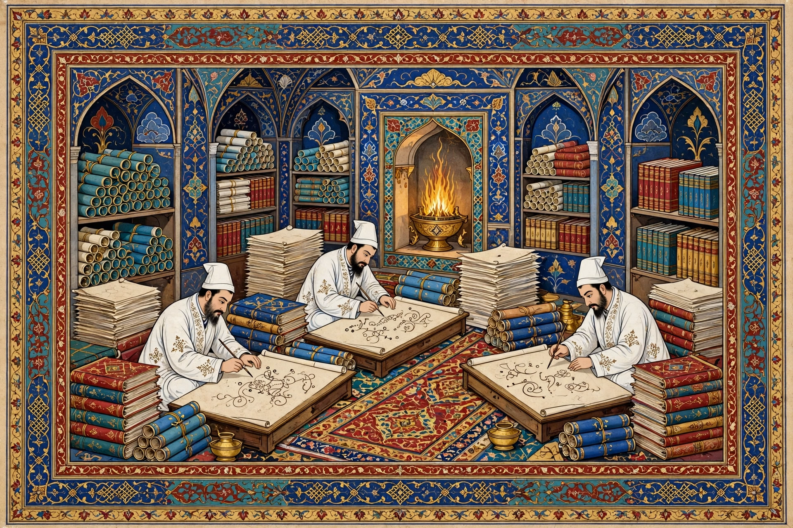
نگارهی زنده · در حرکتکاتبان اوستا در کتابخانهی آتشکده — اوستای بزرگ ساسانی در بیستویک نسک نوشته شد.
آنچه امروز «اوستا» میخوانیم، بازماندهی کتابی بسیار بزرگتر است. در روزگار ساسانیان، اوستای کامل بیستویک «نسک» (کتاب) داشت؛ نسکهایی دربارهی آفرینش جهان، آیینها و نیایشها، پادشاهان و پهلوانان، پزشکی و ستارهشناسی و داد و قانون. به فرمان شاهان ساسانی، موبدان بزرگ — و نامآورتر از همه آذرباد مهراسپندان، موبدانموبدِ شاپور دوم — این نسکها را از روایتهای پراکنده و از آنچه موبدان از بر داشتند گرد آوردند و سامان دادند. سنت کهن میگوید اوستا بر پوستهای آمادهی گاو و با آب زر نوشته و در گنج شاهی نگه داشته میشد. و در دل همان سنت، همهی این کتاب بزرگ گسترش نیایشی کوتاه دانسته میشود؛ کهنترین و ورجاوندترین نیایش اوستا، «یتا اهو» (اهونَوَر)، که گفتهاند اهورامزدا آن را پیش از آفرینش جهان خواند:
yaθā ahū vairyō aθā ratuš aṣ̌āt̰cīt̰ hacā
نیایش «یتا اهو» (اهونور) به زبان اوستایی
یعنی: «چنانکه سرور (اهورا) برگزیده است، داور نیز از روی راستی برگزیده است» — و نیایش ادامه مییابد: پاداش اندیشهی نیک از آنِ کردارهای این جهان است و شهریاری از آنِ اهوراست که برای درویشان نگهبان میگمارد.
با فروپاشی شاهنشاهی ساسانی، بخش بزرگی از آن بیستویک نسک از میان رفت؛ در آتشسوزیها و آشوبها و پراکندگیها تنها بخشی بر جای ماند و موبدان سدهها آنچه مانده بود سینهبهسینه از بر نگه داشتند تا دوباره نوشته شود.
از آن کتاب بزرگ، تنها «وندیداد» است که کامل به ما رسیده است؛ یسنا و یشتها و ویسپرد و خردهاوستا نیز همان بازماندگان گرانبهاییاند که در پنج بخش پیش با هم خواندیم. پس اوستایی که امروز در دست ماست، هم کتابی ورجاوند است و هم یادگار پایداری موبدانی که سدهها نگذاشتند این سرودها خاموش شوند — و این بخش از سایت، با این شش بخش، همهی اوستای بر جای مانده را از آغاز تا پایان پیمود.
بخش هفتم · نسکهای آموزشی اوستا
هیربدستان و نیرنگستان — دو کتاب آموزش موبدان و آیینها
با صدای خودم بشنواین بخش را با صدای خودم میخوانم و ضبطش را همینجا میگذارم تا با صدای من گوش بدهی.
بهزودی
نگارهی زنده · در حرکتآموزشگاه موبدان — هیربدان به شاگردان، خواندن اوستا و آیینها را میآموزند؛ یادگار هیربدستان.
در بخش ششم دیدیم که اوستای بزرگ ساسانی بیستویک نسک داشت و بیشتر آن نسکها از میان رفتند. دو نسک از آن میان، کتابهای «آموزش» بودند: «هیربدستان» و «نیرنگستان». هیربدستان کتاب آموزش موبدان بود؛ «هیربد» آموزگار دینی است و «هیربدستان» یعنی آموزشگاه و کتاب آموزش هیربدان. در این نسک گفته میشد شاگردی که میخواهد موبد شود، نزد آموزگار چگونه و چه اندازه درس بخواند، چه کسی شایستهی آموختن اوستاست و آموزگار و شاگرد هر یک چه وظیفهای دارند؛ حتا از چیزهای سادهای چون خوراک و خواب و جای درس خواندن شاگرد سخن میرفت. نیایشی که هر شاگرد از بر میخواند و با آن به آیین زرتشتی ایمان میآورد، «فرورانه» است:
fravarānē mazdayasnō zaraθuštriš vīdaēuuō ahura.t̰kaēṣ̌ō
نیایش «فرورانه» (یسن ۱۲) به زبان اوستایی — پیمان ایمان هر شاگرد
یعنی: «ایمان میآورم که مزداپرست و زرتشتیام، دیوان را نمیپذیرم و آموزهی اهورایی را برمیگزینم.»
«نیرنگستان» کتاب آیینها بود؛ «نیرنگ» در زبان اوستایی و پهلوی یعنی دستور و شیوهی درست انجام دادن یک آیین. در این نسک، موبدان میآموختند هر نیایش و جشن و آیینی — از یسنا و آفرینگان تا آیینهای پاکی — گامبهگام چگونه برگزار شود: چه کسی آن را برپا کند، چه ابزار و پیشکشی به کار آید و هر بخش از سرودها کِی و چگونه خوانده شود. اگر هیربدستان کتاب «درس» بود، نیرنگستان کتاب «کار» بود؛ یکی آموزگار و شاگرد را میساخت و دیگری دست موبد را در برگزاری درست آیینها میگرفت.
از این دو کتاب، امروز تقریباً هیچ نمانده است. در آشوبهای پس از فروپاشی شاهنشاهی ساسانی، نسخههایشان از میان رفت و چون کتابهایی ویژهی موبدان بودند و مردمان عادی آنها را از بر نداشتند، کسی نبود که سینهبهسینه نگهشان دارد. تنها نامشان و چکیدهای کوتاه از آنچه در آنها بوده، در کتاب پهلوی «دینکرد» بر جای مانده است؛ همان چکیدهای که به ما میگوید این دو نسک چه بودند و چه در خود داشتند. پس هیربدستان و نیرنگستان را امروز تنها از راه همان چکیده میشناسیم: دو کتابی که سدهها، آموزش موبدان و درستی آیینهای ایران کهن بر دوش آنها بود.
بخش هشتم · آفرینها و ستایشها
آفرینگانها — ستایشها و آفرینهای روزهای فرخنده
با صدای خودم بشنواین بخش را با صدای خودم میخوانم و ضبطش را همینجا میگذارم تا با صدای من گوش بدهی.
بهزودی
نگارهی زنده · در حرکتآیین آفرینگان — موبدان با برسم در دست، گرد آتش و پیشکشهای جشن، آفرین میخوانند.
واپسین بخش ما «آفرینگانها»ست. «آفرین» در زبان اوستایی و فارسی یعنی ستایش و دعای خیر و برکت خواستن برای دیگران؛ و آفرینگان آیینی است که در آن موبدان، با خواندن همین آفرینها، برای زندگان برکت و تندرستی و فراوانی میخواهند و روان درگذشتگان را نیز شاد میدارند. آفرینگانها بخشی از خردهاوستا به شمار میآیند و برای هر جشن و روز فرخندهای، آفرین ویژهای هست: آفرین گاهنبار برای جشنهای ششگانهی سال، آفرین میزد برای سفره و خوردوخوراک، و آفرینهایی برای نوروز و مهرگان و دیگر روزهای خجسته. در آیین آفرینگان، موبدان سپیدجامه گرد سفرهای سپید مینشینند که بر آن آتشدان و میوه و گل و شیر و نوشیدنی آیینی و دستههای نازک چوب «برسم» نهاده شده و با آوازی آرام آفرین میخوانند. نمونهی کوتاهی از یک آفرین اوستایی:
hamā zōr bāšīd hamā aṣ̌ō bāšīd
از آفرینهای اوستایی (آفرینگان)
یعنی: «همنیرو باشید؛ همراست و درستکار باشید» — آفرینی که موبد برای انجمن میخواند و از اهورامزدا میخواهد مردمان را در نیرو و راستی، یکدل و همراه نگه دارد.
آفرینها تنها نیایش نیستند؛ آرزوهای نیک یک مردماند که به زبان سرود درآمدهاند: تندرستی و دیرزیوی، روزی فراوان، فرزندان نیک، پیروزی راستی بر دروغ و سالی پر از باران و خرمی. در پایان آیین، پیشکشهای سفره میان باشندگان بخش میشود و انجمن با هم «آفرین» میگویند؛ یعنی هر کس همان برکت را برای دیگری هم میخواهد.
آفرینگانها هنوز هم در جشنهای زرتشتی — از گاهنبارها تا جشنهای خانوادگی — خوانده میشوند و آوایشان از کهنترین آواهای برکتخواهی در فرهنگ ایران است. این آفرینها واپسین برگ گشت ما در جهان اوستاست: از گاتهای خود زرتشت تا ستایشهایی که امروز هم بر سر سفرههای جشن خوانده میشوند؛ سرودهایی که سه هزار سال است خاموش نشدهاند.
تازهبخش نهم · آفرینش جهان
بندهشن — آفرینش جهان
با صدای خودم بشنواین بخش را با صدای خودم میخوانم و ضبطش را همینجا میگذارم تا با صدای من گوش بدهی.
بهزودی
نگارهی زنده · در حرکتبندهشن — آسمان و ستارگان، البرز سر به فلک، و زمین با گاو نخستین و کیومرث.
بخش نهم ما «بندهشن» است؛ کتابی به زبان پهلوی — زبان ایران در روزگار ساسانی — که نامش یعنی «آفرینش آغازین». بندهشن دانشنامهی ایران کهن است: در آن از آفرینش جهان و آسمان و زمین، از ستارگان و ماه و خورشید، از کوهها و دریاها و رودها، از گیاهان و جانوران و نخستین مردمان سخن میرود و دانستههای ایرانیان کهن دربارهی جهان، یکجا گرد آمده است. بندهشن میگوید در آغاز، اورمزد — خدای نیکی و روشنایی — در جهان بالا و در روشنایی بیپایان بود و اهریمن — روان بدی و تاریکی — در ژرفای تاریکی؛ و میان آن دو، تهیگی بود. کتاب، مانند بیشتر کتابهای پهلوی، با نام اورمزد آغاز میشود:
pad nām ī ohrmazd ī xwadāy
آغاز بندهشن به زبان پهلوی
یعنی: «به نام اورمزد، خدای بزرگ» — آغازی که بیشتر کتابهای پهلوی با آن گشوده میشوند و نشان میدهند دانش این کتابها از کجا ریشه میگیرد.
بندهشن آفرینش را نبردی بزرگ میان نیکی و بدی میداند: اورمزد آفرینش نیک را گامبهگام و در زمانی دراز پدید آورد — نخست آسمان، سپس آب، زمین، گیاه، گاو نخستین و سرانجام کیومرث، نخستین انسان — و برای هر یک، نگهبانی از ایزدان گماشت. البرز، نخستین و بزرگترین کوه جهان، هشتصد سال رشد کرد تا سر به آسمان رساند و خورشید و ماه و ستارگان بر گرد او میگردند. از گاو نخستین، چون درگذشت، گیاهان و جانوران سودمند پدید آمدند و از کیومرث نیز، پس از او، مشی و مشیانه — نخستین مرد و زن — روییدند و مردمان جهان از آنان پراکنده شدند.
بندهشن تنها کتاب آفرینش نیست؛ گاهشماری و ستارهشناسی و جغرافیای ایران کهن نیز در آن است: نام کوهها و دریاها و رودهای ایران، ردهبندی جانوران و گیاهان و حتا سرگذشت شاهان تا پایان جهان و رستاخیز. آنچه امروز از بندهشن داریم، بازماندهای است که موبدان زرتشتی در سدههای پس از فروپاشی شاهنشاهی ساسانی از روی نسخههای کهن بازنوشتند و نگه داشتند؛ و بی آن، بخش بزرگی از دانش و باور ایرانیان کهن دربارهی جهان از یاد میرفت.
تازهبخش دهم · سفر به جهان دیگر
ارداویرافنامه — سفر به جهان دیگر
با صدای خودم بشنواین بخش را با صدای خودم میخوانم و ضبطش را همینجا میگذارم تا با صدای من گوش بدهی.
بهزودی
نگارهی زنده · در حرکتارداویرافنامه — روان ویراف بر پل چینود، با راهنمایی ایزدان، به سوی روشنایی میرود.
بخش دهم ما «ارداویرافنامه» است؛ کتابی به زبان پهلوی دربارهی سفری شگفت به جهان دیگر. در روزگاری که پس از تاختوتاز بیگانگان، در درستی آیین و باورها تردید افتاده بود، موبدان و بزرگان از میان مردمان، «ویراف» را برگزیدند؛ مردی پرهیزگار و راستکردار که هفت خواهر داشت و همه او را به پاکی میشناختند. ویراف را به آتشکده بردند؛ او جامی از نوشیدنی آیینی نوشید و هفت شبانهروز به خوابی ژرف فرو رفت و روانش از تن جدا شد و به جهان دیگر سفر کرد تا از بهشت و دوزخ و سرنوشت روانها خبر بیاورد و مردمان را در راه نیکی استوار کند. کتاب با نام یزدان آغاز میشود:
pad nām ī yazdān
آغاز ارداویرافنامه به زبان پهلوی
یعنی: «به نام یزدان» — آغازی که کتابهای پهلوی با آن گشوده میشوند و سفر شگفت ویراف از همینجا آغاز میشود.
روان ویراف با راهنمایی سروش و آذر، دو ایزد نگهبان، نخست به پل چینود رسید — پلی باریک میان این جهان و آن جهان که روان هر کس پس از مرگ باید از آن بگذرد — و دید که روان نیکوکاران چگونه به آسانی و با پیشواز دوشیزهای زیبا — که پیکر کردارهای نیک خودشان است — از پل میگذرد و به بهشت میرسد، و روان بدکاران چگونه با هراس میلرزد و به دوزخ فرو میافتد. آنگاه ویراف سه گام بهشت را یکبهیک دید: جای ستارگان، جای ماه و جای خورشید، تا رسید به گرودمان، خانهی اورمزد و بلندترین جای بهشت، که در آن روشنایی و خرمی بیپایان است.
سپس ویراف را به دوزخ بردند؛ ژرفایی تاریک و بدبو که در آن روانهای گناهکاران، هر یک به سزای کردار بد خود، رنج میبردند. پس از هفت شبانهروز، روان ویراف به تنش بازگشت؛ او بیدار شد و هرچه دیده بود برای موبدان و مردمان باز گفت و دبیران همه را نوشتند. ارداویرافنامه سدهها برای ایرانیان کتابی گرامی بود؛ هم گزارشی از باور کهن ایران دربارهی زندگی پس از مرگ است و هم آیینهای از داد و اخلاق: اینکه هر کرداری، نیک یا بد، در آن جهان پاسخی دارد.
بخشهای اوستا بهترتیب
یسنا و گاتها — سرودهای زرتشتمنتشر شد
یشتها — سرودهای ایزدان: تیشتر، مهر، آناهیتا و دیگرانمنتشر شد
ویسپرد — نیایشهای جشنهامنتشر شد
وندیداد — آیین پاکی و پاسداری از آفرینشمنتشر شد
خردهاوستا — نیایشهای روزانهمنتشر شد
اوستای بزرگ ساسانی — بیستویک نسک و آنچه بر جای ماندمنتشر شد
هیربدستان و نیرنگستان — دو نسک آموزشیمنتشر شد
آفرینگانها — ستایشها و آفرینهای روزهای فرخندهمنتشر شد
بندهشن — آفرینش جهانتازهمنتشر شد
ارداویرافنامه — سفر به جهان دیگرتازهمنتشر شد
اوستا هم از آغاز و به همین ترتیب پیش میرود؛ هر بخش با متن و سرودهای خودش و شرحی به فارسی روان.
بخش یکم تا دهم منتشر شد؛ همهی بخشهای اوستا کامل شد.
از دل، برای سایت
حمایت مالی — با هر مبلغی که دوست داری
اگه این سایت و اپلیکیشن مهر ایران دخت رو دوست داری و دلت میخواد حمایتش کنی، با هر مبلغی — حتی کمترین مبلغ — میتونی کمک کنی. کوچیکترین کمک هم کمک میکنه این سایت ادامه پیدا کنه و بخشهای تازهای بهش اضافه بشه. هیچ حداقلی نیست و هیچ فشاری هم نیست؛ تنها اگه خودت دوست داشتی.
راه حمایت — با PayPal، ساده و امن
اگه دوست داری حمایتم کنی، با هر مبلغی — حتی یه مبلغ خیلی کوچیک — دکمهی زیر رو بزن؛ در صفحهی PayPal خودت مبلغ رو انتخاب میکنی و حمایتت یکراست به دستم میرسه. هیچ نشانی بانکیای هم جایی نشون داده نمیشه.
اگه ترجیح میدی اول پیام بدی، از راه صفحهی «پیوند با من» هم میتونی با من در پیوند باشی.
راه پیوند
با من در پیوند باش — بهم رایانامه بفرست
برای هر پرسشی دربارهی فروشگاه و سفارش محصولات، یا دربارهی شاهنامه و اوستا و بخشهای دیگهی سایت، یا هر حرف دیگهای که داری، بهم رایانامه بفرست. رایانامهات یکراست میاد پیش خودم، خودم میخونمش و پاسخ میدم.